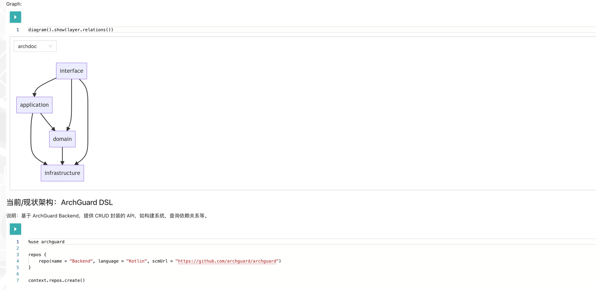
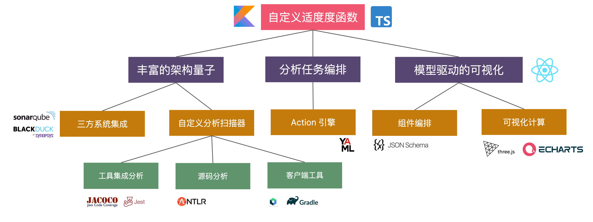

PS：本模式手册是我们（ArchGuard core team) 在构建 ArchGuard 时，参考了很多优秀的架构治理模式，包括但不限于：
- 关注点驱动
- 城市隐喻
- 架构适应度函数
等。我们尝试去构建一个架构治理模式的 "模式语言"，以用于体系化的思考：如何更好地进行架构治理？
在这本《架构治理模式》，将介绍一系列调整现有人员、流程和技术的实践与模式等，使架构符合架构师预期的设想，以最好地帮助架构师交付业务成果。
欢迎大家一起参与到这个项目中来，你可以通过以下方式参与：
- 在 GitHub 上提交 Issue
- 在 GitHub 上提交 Pull Request
（点击右上角的 GitHub/编辑按钮即可修改）
持续关注我们：

定义架构治理
我们看到有一种企业架构的定义：
Enterprise Architecture is the practice of aligning the people, processes and assets of technology to best deliver business outcomes.
对于架构治理而言，也建议采用类似的定义：
架构治理是一系列调整现有人员、流程、技术和工具的实践，使架构符合预期的设想，以最好地交付业务成果。
这里的设想包含了架构师脑子里的蓝图，将蓝图实例化为架构图本身也是一种治理。
本书结构
对于架构分析、治理的相关总结：
- 第一部分，基础篇。介绍架构治理的基本概念，包括架构治理的目标、架构治理的方法等。
- 第二部分，数字化治理模式。介绍如何以数字化治理架构的模式。
- 第三部分，流程与能力治理模式。介绍企业架构能力所需的流程模式与能力模式。
- 第四部分，工具化模式。
- 第五部分，反模式。
- 第六部分，其它。
不同的架构方法差异：
| 学院派解决方案 | 工业界解决方案 | |
|---|---|---|
| 关注点 | 专注于架构化模型的分析评估 | 专注于广泛的开发问题 |
| 模型 | 单独模型 | 模型族群化（families of models） |
| 风格 | 严格的建模标记 | 实用性优先于严谨性 |
| 分析 | 强大的分析技术 | 架构作为开发的蓝图 |
| 广度 vs 深度 | 深度优于广度 | 广度优于深度 |
| 方案差异 | 特殊用途的解决方案 | 通用解决方案 |
架构建模：如何用代码描述软件架构
在架构治理平台 ArchGuard 中，为了实现对架构的治理，我们需要代码 + 模型描述所要处理的内容和数据。所以，在 ArchGuard 中， 我们有了代码的模型、依赖的模型、变更的模型等，剩下的两个核心的部分就是* 架构的模型*、 架构的治理模型，其它的还有诸如构建的模型等，会在后续的过程中持续引入到系统中。
架构是什么？？
对单个语言的代码建模并不难，对于一个语言有特别的概念，如 package、class、field、function 等等。在有了明确概念的基础之下，结合我们的业务上的需求， 就能构建一个大差不差的模型。在采用 DDD 这一类建模方式的时候，产生共识，提炼知识，形成概念等，便能构建出模型的雏形。
起点：架构是重要的元素
然而，对于架构来说，业内没有统一的定义。于是乎，诸如 Martin Fowler 喜欢引用 GoF（《设计模式》作者们） 之一的 Ralph Johnson 对于架构的描述：
架构是那些重要的东西……，无论它具体是什么。
同样的 Grady Booch （UML 的发明者之一）也是惟类似的方式来概括架构的：
软件架构是系统设计过程中的重要设计决定的集合，可以通过变更成本来衡量每个设计决定的重要维度。
所以呢，这让我们感觉说了等于没说，我们得去定义什么是重要的东西。而重要的东西，在不同人、不同场景之下，它是存在差异的。哪怕是同一个类型的软件， 在不同的公司、不同的利益相关者的背景之下，重要的东西也尽相同。
原则：可是到底哪些是重要的？
于是乎，我再尝试去引用最新的架构相关的书籍，诸如于我编写这篇文章时，参考《软件架构：架构模式、特征及实践指南》作者 Neal Ford 对于架构的定义：
软件架构中包含系统的结构、系统必须支持的架构特征、架构决策以及设计原则。系统的结构是指实现该系统的一种或多种架构风格（如微服务、分层和微内核等）。 架构特征定义了系统的成功标准。架构决策定义了一组关于如何构建系统的规则。设计原则是关于如何构建系统的非必须遵循的指导原则。
对于模型构筑层面而言，书中的定义也提供了一个灵活性。诸如于在架构特征的定义里，关注的是各类能力（ability），如互操作性、可适用性、可测试性等等。
在现有的 ArchGuard 这个业务场景之下，我们难以自动化地识别出各类的特征。因为从实践的层面上来说，这些能力并不一定实现了，它是目标架构， 可能还只存在于架构蓝图之上的。在这个层面上，偏向于是设计层面的架构定义。
另外一方面，架构决策则是在架构治理的过程中，我们所关注的核心。可以在后续针对于这一系列的原则的规则，构建出一个描述架构特征的 DSL。
重要的元素：组件、边界与通信
接着，让我们再回到 Bob 大叔（Robert C. Martin）的《架构整洁之道》书中的定义：
软件系统的质量是由它的构建者所决定的，软件架构这项工作的实质就是**规划如何将系统切分成组件，并安排好组件之间的关系，以及组件之间互相通信的方式 **。
再从 Clean Architecture 模式来说，Bob 大叔一直在强调的是：顶层抽象策略与底层实现要实现解耦。诸如于如何划定合理的边界？如何组合相关的策略与层次？ 在模式上，我们得到了一个越来越清晰的定义。
然而，我们还遇到一个更难的问题是，如何定义一个组件是什么？**还有关系是什么？**在书里的序言， Kevlin Henney（《面向模式的软件架构》卷4、卷 5的作者之一） 给了一个更精确的描述词：组织结构（structure），从宏观到微观的构筑过程，其中的构件包含了组件、类、函数、模块、层级、服务等。
对于大型软件来说，其组织结构方式异常复杂，它像极了一个国家的层级关系，一级部门、二级部门等等。而部门之间又有复杂的关系，正是层级关系 + 层级的构件构建成了这个复杂的系统。 （PS：而了让系统能良好的运行，即其中的组件（螺丝钉）按规则执行，则需要一个督察组织。）
层次结构：组件和关系
软件架构已经有了几十年的历史，我们已经用 ”模式“ 这一词对过去的架构进行了一系列的总结。二十年前，人们初步总结了《面向模式的软件架构》（POSA）。 在这里，就引述 POSA 1 的第 6 章里，有一个完整的层级关系介绍：
软件架构描述了软件系统的子系统和组件以及它们之间的关系。通常使用不同的视图来说明子系统和组件，以展示软件系统的功能特征和非功能特征。
组件是被封装起来的软件系统的一部分，包含一个接口。组件是用于打造系统的构件。在编程语言层面，组件可能由模块、类、对象或一组相关的函数表示。
关系描述了组件之间的联系，可能是静态的，也可能是动态的。静态关系会在源代码中直接显示出来，它们指出了架构中组件的布局；动态关系指出了组件之间 的临时关系和动态交互，可能不容易通过源代码的静态结构看出来。
视图呈现软件架构的某个方面，展示软件系统的某些具体特征。
……
在今天来看，从模式上看，软件架构本身并没有发生太大的变化。只是呢，一些定义发生了变化，诸如于组件和接口。在微服务架构风格流行的今天，一个微服务也可以视为一个组件， 它包含了一系列的接口，对外提供了复用的能力。而用来描述它们的关系的元素，则不再是过去的函数调用，变为了远程调用、事件触发。
现在，我们有了一详尽的定义，在建模上，可能还欠缺一些元素，诸如于，如何分析出组件间的关系。
第 3 种架构视图：展示工程关注点
在 ArchGuard 中，我们使用了 C4 架构可视化模型作为一种参考视图。这种实现的方式主要是从分析和可视化的层面来考虑的。除了 C4
之外，
另外一种主流的方式是 4 + 1 视图。顺带一提，在 4 + 1 的论文《Architectural Blueprints—The “4+1” View Model of Software
Architecture》，
同样也有一个描述架构的表示公式：Software architecture = {Elements, Forms, Rationale/Constraints}。
从通识的角度来看，采用 4 + 1 视图是一个比较理想的方式。只是，由于存在大量的 PaaS、IaaS 等 xx 即服务设计的不合理性， 使得这些记录基础设计相关信息的代码，并没有与代码库一起存放，使得在辩识上存在一定的难度。
因此，从实现的层面来说，在这里，我们要引用的是《面向模式的软件架构》中，提到的《Software Architecture in Industrial Applications》（也可以参考《实用软件体系结构》一书）架构视图：
- 概念视图：描述了整个系统需求向整个体系结构的转化。
- 模块视图：描述了如何将系统划分成模块并将模块组织成层。
- 执行视图：描述了系统的动态元素以及它们之间的交互。
- 代码视图：描述了源代码的组织结构。
在这个视图的定义里，它更能清晰地划分开几个不同层面的考虑因素。采用作者们在最早的论文里提到的示例：
| 软件架构 | 使用示例 | 影响因素的例子 |
|---|---|---|
| 代码架构 | 配置管理, 系统构建、OEM 定价 | 编程语言，开发工具和环境，扩展子系统 |
| 模块架构 | 模块接口管控、变更影响分析、接口约束一致性检查、配置管理 | 使能软件技术、组织结构、设计原则 |
| 执行架构 | 性能和可调度性分析，系统的静态和动态配置，将系统移植到不同的执行环境 | 硬件架构、运行时环境性能标准、通信机制 |
| 概念架构 | 使用特定领域的组件和连接器进行设计、性能评估、安全性和可靠性分析、了解系统的静态和动态可配置性 | 应用领域、抽象软件范式、设计方法 |
从表格的右边里，我们就可以直接对应到系统所需要的每个层面的设计因素，诸如于编程语言等元素放在代码架构上。换句话来说，在微服务、单体架构下，都能找到自己合适的位置。
概念的最后：描述模型的类型系统
最后，为了保证本文在概念的完整性，我们还需要一种方式来描述这个系统种的模型和一系列的概念，在形式上，它是一个类型系统。诸如于，我们在 UML中所表示的 （PlantUML 表示方式）：
class Architecture {
Component[] components
System[] subSystems
Relation[] relations
ArchStyle archStyle
Rule[] archRules
...
}
一个用来描述类型的系统，就是一个类型系统，和编程语言里的类型是等同的。它可以用来解释一系列的概念，以及概念之间如何连接。
顺带一提，如果我们把编程语言看作是一个系统，那么我们就会发现其在设计的有趣之处。类型系统与结构体（或者类）可以用于构建系统中的概念，一个个的表达式则是用于构建概念之间的关系。
架构治理基础
在架构治理上，我们可以用一些简单的元素来进行概括：
- 模式。找查出坏的味道，并用好的设计改进。
- 规范。一个关于架构决策的文档化。
- 规则 。规范的工具化与形式化表示
在我们的场景下，架构治理方案就可以围绕于三个要素来构建。
模式：坏的味道与好的方案
在我们的行业里，会将解决特定问题的解决方案称之为模式，如设计模式、架构模式。这些广为流传的编程模式，往往都是好的、最佳的实践。而却存在另外一类，不好的模式其实也是模式， 其往往把它们称为有味道（Smell）的，代码里的是代码坏味道，架构里的便是架构的坏味道。
在一个组织里，代码随着人员的内部流动、自定义框架的编码风格、公司级别的规范定义，使得整体的代码模式会趋向于一致。这种一致性会受到人员变更带来短期的影响， 些许的高水平 “新人” 可能会带给团队一股新鲜备注；大量的新人的涌入，也会可能使得原来的好的模式被冲淡。但是呢，不论如何，替换的只是模式本身，而不是模式的存在。 而坏味道本身是与好的模式进行比较，即好的实践应该是怎样的。
也因此，在治理的第一步就是让坏味道能浮出来。它可以是通过人为地看项目代码，进而得到一些初步的结论，并基于结论构建出洞见；也可以是像 ArchGuard 一样的专家系统，可以通过 AST 从语法中分析到坏的味道，并将它们可视化出来。
规范：架构决策的文档化
规范是我们在日常的开发过程中约定俗成的标准，其本质是对于一系列架构决策的文档化。作为架构师/开发者，我们定义所有的 API 应该是怎样的？如何去处理数据？ 如何构建质量防护？在另种一个话题：轻量级架构决策里，我们定义的是架构决策应该编写出来，以格式化的文档。
好规范的本质是推荐一系列的最佳实践。“年轻” 的开发者往往不能理解诸多实践的意义，为什么它应该这么做？不这么做会影响到什么？有时候， 需要经验丰富的开发者告他们，WHY + WHAT + HOW。不过呢，在一些大型 IT 组织的里，人们往往依旧会采用 “考试” 的方式，用一种简单粗暴的方式来确保： 对于什么是好的模式/实践认知是一切的。
而规范不论是明文规定，还是约定俗成，我们都可以发现，在业务繁荣或者新的加入的时候，慢慢都会被破坏。所以，我们又开始寻找一些能让规范有效力的方式。
规则：规范的工具化与形式化表示
在某种意义上，规则是一种规范的工具化手段。其最常见的方式是 Linter，一种基于语法树/语法结构的规则化工具。
这种规则可以是我们在学习英语时的语法规则，它是语言中高度抽象的组合关系和聚合关系的约定俗成的语言的规则，包括组合规则和聚合规则。诸如于在英语中， 常见的句型可以是：主语-谓语-宾语-宾语补足语（英语四级没过，这简直是噩梦）。围绕于这些规则，便可以构建一系列的自动化检测工具。
这样的工具，也可以是我们使用 Java 编写企业应用时，用的 Checkstyle；又或者是使用 TypeScript 编写前端应用时，用的 ESLint。对这一点而言，它们就是对于常见规则的形式化。
模式的说明模式
定义模式
在这里，我们遵循与《面向模式的软件架构 卷 1：模式系统》一致的模式定义，所以每个模式包含三部分：
- 背景（Context）问题出现的背景
- 问题（Problem）该背景下反复出现的问题
- 解决方案（Solution）经过实践检验的解决之道
模式纲要：
模式
├── 背景
│ └── 引发设计问题的设计情形
├── 问题
│ └── 在特定场景下反复出现的一系列作用力
└── 解决方案
└── 平衡这些作用力的配置
├── 结构（包含组件和组件之间的关系
└── 运行阶段行为
架构治理的模式语言
模式语言与具体领域高度相关，并且能对这一类系统提供具体而周全的引导，具体包括以下几项：
- 要解决的主要问题有哪些？
- 这些问题应该以什么样的先后次序解决？
- 解决一个给定问题，有什么可用的替代解决方案？
- 怎样处理问题之间的依赖性？
- 在有“周边” 问题存在的情况下，怎样最有效地解决单个问题？
简单来说，模式语言针对于某个特定的问题（如并行编程）所抽象的模式，并包含了他们之间的关系等，能用于系统性地解决这一类问题。
元素化模式
“软件架构是系统设计过程中的重要决定的集合，可以通过变更成本来衡量每个设计决定的重要维度。” —— Grady Booch
建模
建模是使用模型在业务和 IT 开发中概念化和构建系统的跨学科研究。
- 概念化
- 价值建模
- 业务建模
- 技术建模
分解？概念范畴化
- LVT
- 分层架构？
- 复杂度拆解？
同构
在抽象代数中，同构指的是一个保持结构的双射。 在更一般的范畴论语言中，同构指的是一个态射，且存在另一个态射，使得两者的复合是一个恒等态射。
- 利益相关者映射
- 能力对齐
- 团队拓扑
Mapping：战略 => 架构 => 实践
示例：
| 战略目标 | 架构原则 | 设计和交付实践 | |
|---|---|---|---|
| 赋能业务扩展 | 减少惯性 | REST 标准化 | |
| 支持进入新市场 | 消除偶然的复杂性 | 封装遗留系统 | |
| 支持已有业务创新 | 一致的接口和数据流 | 最小化依赖 | |
| 没有银弹 | .... |
显性
意图揭示、显性化知识、可视化
- 城市隐喻（Code City（软件城市））
- Path to Production
Outcome
资产？
架构师的主要任务是定义全面的上下文（一组评估标准），以便做出平衡的架构决策。
决策（英语：Decision-making）是一种认知过程，经过这个过程之后，个人可以在各种选择方案中，根据个人信念或是综合各项因素的推理，决定出行动， 或是决定出个人要向外表达的意见。每个决策过程都会以产生最终决定、选取最终选择为目标。而这些选择的形式可以是一种行动或选取的意见。
- 架构决策框架
- 架构决策记录
特征集合
特征度量
问题
解决方案
度量分类
- 运营性度量。
- 性能或可伸缩性，如平均响应时间、最大响应时间等。
- 结构性度量。
- 内部结构，如循环复杂度
- 过程度量。
- 可测试性
- 敏捷性。
架构特征仓库
架构特征仓库模式通过将架构特征的定义和实现分离，来提供一种简单的方法来管理架构特征。
架构特征是一种描述系统的特征，它们可以被用来描述系统的行为。架构特征可以是一种技术，也可以是一种架构风格。架构特征仓库是一个包含了架构特征的集合，它们可以被用来描述系统的行为。
问题
定义核心域模型的架构特征是一项艰巨的任务
解决方案
创建一个共享的架构特征仓库，用于存储架构特征的定义和实现。架构特征仓库可以是一个单独的 Git 仓库，也可以是一个单独的文件夹，还可以是一个单独的数据库。
架构适应度函数
架构的适应度函数为某些架构特征提供了客观的完整性评估。 适应度函数，本质上就是一组评估函数，用以评估架构在不同维度上的表现（性能、可靠性、安全性、伸缩性、代码规范等）， 并从全局角度进行平衡，从而实现增量和引导式演进。 适应度函数不单指特定的一种方法（如，单体测试），而是所有能够评估架构性能的方法。
问题
在软件架构演进过程中，我们需要对架构进行评估，以便于我们对架构进行改进。 评估的目的是为了找到最优的架构，而不是为了找到最好的架构。
解决方案：应用度函数驱动
步骤 => 参考《Fitness function-driven development》：
- 将架构视为具有用户旅程的产品，并首先收集业务、合规性、运营、安全、基础架构和应用程序开发的利益相关者的意见，以了解他们认为对业务成功最重要的架构属性。
- 评估利益相关者的动机并从整体上优先考虑对组织重要的质量。检查这些主题通常会发现潜在的冲突或架构权衡。
- 收集适应度函数后，在测试框架中起草它们。创建所需的适应度函数——并将它们包含在适当的交付管道中——将这些指标作为企业架构的一个重要方面进行传达。
示例
适应度函数示例：

流程示例：
示例：Fitness Function 工作坊
Fitness Function katas 旨在作为一个小团体（3-5 人）练习，通常作为更大团体（4-10 组是理想的）的一部分，每个人都在做不同的 kata。 主持人跟踪时间，分配 Katas（或允许本网站随机选择一个），并充当练习的促进者。
相关资料：http://evolutionaryarchitecture.com/ffkatas/index.html
相关：主序列距离适应度函数
相关资源
- 《演进式架构》
- 《Fitness function-driven development》
架构孪生
架构孪生是一种旨在精确反映架构设计、实现与运行态等的虚拟模型，以数字化的形式对软件的架构、代码模型、分层、实现技术等的进行动态的呈现。
上下文

生命周期中的反馈回路
我们做架构设计审查、代码度量等的目的是：掌握现有系统的设计与实现，以有序引导架构演进的方向。所以，我们围绕于生命周期的设计态、实现态与运行态，以持续架构设计的反馈回路，即由输出端的变化来调整输入端。所以，我们围绕于三态：
- 设计态：目标架构。通过 DSL（领域特定语言） + 架构工作台来构建 。
- 开发态：实现架构。关注于：可视化 + 自定义分析 + 架构治理。
- 运行态：运行架构。结合 APM 工具，构建完整的分析链。
我们应该预期这样一些反馈回路：
- 设计 DSL 与开发态的代码实现绑定。可以反应原来的设计 DSL 是否原理，代码实现是否能与原先设计一致？如果不能那么问题出在哪里？
- 设计态的服务蓝图与开发态的服务地图（ArchGuard 静态分析）、运行态的调用链路相绑定。可以反应与外部系统的设计和交互是否合理？是否符合当初的预期？
- ……
而在构建反馈回路的要点是：对于架构进行量化。
架构能准确描述吗？
量化架构是一件困难的事，难度不在于代码和架构的模型本身。如果只从标准的架构定义来说，在先前的文章《如何为代码建模？》、《为“架构”再建个模：如何用代码描述软件架构？》介绍了代码的模型和架构的模型。但是，但是，我们都知道架构师是有无限的责任边界的，你要考虑所有不可能考虑到的底层问题，代码规范、数据库规范、异常处理机制等等。
既然如此，架构师的架构边界在哪里？如果我们的职责超脱了狭义的架构本身，那么我们描述架构的方式是否应该改变？
所以，我们需要寻找 “动态” （适用于不同组织）的架构模型，以及 “动态” 的治理模型。那么，答案是：
- 架构的数字孪生
- 架构适应度函数
足够的自定义模型的空间可以让问题变得简单起来。
解决方案：架构孪生
回到我们参考于数字孪生的架构孪生定义上：
架构孪生是一种旨在精确反映架构设计、实现与运行态等的虚拟模型，以数字化的形式对软件的架构、代码模型、分层、实现技术等的进行动态的呈现。还能允许在每个阶段模拟新代码和设计带来的变化，以持续优化架构。
由此，架构模型是可持续建设和运营中使用的架构孪生策略的关键组成部分。只是呢，为了实现这样的技术，我们需要面对几个挑战：
- 架构模型因子
- 生命周期跟踪与反馈
- 虚拟化演进路径
除此，还有一个非常有意思的问题依旧在考虑中：模拟态。如何针对于新的需求，动态模拟软件的架构演进，以发现潜在的架构瓶颈？
值得一提的是，模型的可视化是数字孪生的一个难题。而在架构侧，Codecity 是一个非常不错的可视化解决方案。
架构模型因子
如何描述架构模型呢？只需要寻找我们所需要的架构因子，便能构成我们的架构模型，再将其虚拟化。
在构建数字孪生时，我们会给研究对象（例如，风力涡轮机）配备与重要功能方面相关的各种传感器。同样的在构建架构孪生时，我们也需要一系列的 "传感器" 来测量研究对象的各种属性。对照之下，我们也可以定义三种形态的 "传感器" ：
- 设计时 - 架构描述性 “传感器”：描述性传感器用于描述架构的功能、特性和行为。
- 开发时 - 静态量化 “传感器”：静态量化传感器用于描述架构的实现技术。
- 运行时 - 探针（probe）：探针用于描述架构的运行时行为。
那么，接下来就是确定一一个详细的架构因子，并将他们组合在一起，构建出自己的适应度函数。在实现上，每一个架构因子可以对应于一个或者多个构建任务，这便是我们想构建 ArchGuard CodeDB 以支撑种类繁多的架构因子。
生命周期跟踪与反馈
如我们在引子 1 所描述，我们应该跟踪于生命周期中的架构因子，并根据已有的模式和规则为构建反馈回路。
- 可视化架构模型。类似于 Codecity
- 内建规则以提供反馈。
- 构建专家系统。
从孪生的角度来讲，难点是相似的：提供反馈与告警机制。
虚拟化演进路径
在这一部分，我们想的是解决一个问题：如何体现你的架构未来会有问题？
我们经常听别人说到：“你的架构不具备可伸缩性”，那么如何通过孪生来体现呢？既然，只有带有回路反馈的全生命跟踪，才是真正的全生命周期概念。那么，在拿到足够的数据时，我们是不是能模拟架构的未来演进。诸如于，根据历史的变化趋势，能否发现未来的瓶颈点？
譬如说，将模拟函数施加到系统之上，看出可视化模型的变化，进而构建基于现有系统的反馈，借此调整系统的设计。
分析概览
分析时机
| 时机 | 关注点 | 工具示例 |
|---|---|---|
| 设计态 | 架构设计 | UML, Feakin |
| 创建态 | 代码规范内建、规范执行机制、分层规范等 | 应用脚手架 |
| 开发态 | 代码规范 | CheckStyle 的 Intellij IDEA插件 |
| 测试态 | 代码规范、分层架构、API 规范等 | ArchUnit |
| 集成态 | 质量门禁 | Sonarqube |
| 运行态 | 服务依赖 | Skywalking |
诸如于：
- 开发态
- 静态代码分析 （编译前）：对源码进行语法、控制流行等的分析，从而实现对代码的依赖分析、静态检查、自动化重构等。
- 基于构建工具分析 （编译时）：通过编写 Gradle 插件/IDE 插件、执行特定的 task，分析各个模块间的依赖关系等。
- 中间表示分析 （编译后）： 对编译过程或者编译后产生的中间表示（IR）分析，如字节码（bytecode）、smali 等。
- 运行态
- 运行时分析 （运行时）：对运行时的数据进行分析，如 JVM 内存、线程、GC 等。
静态代码分析工具对比
| 工具 | 精确度 | 开发难度 | 跨语言成本 | 新语言成本 | 自动化重构 | 主要挑战 |
|---|---|---|---|---|---|---|
| 语言编译器 | 完美 | 低 | 高 | - | Yes | 部分编译器不提供 AST 接口 |
| Antlr | 极高 | 中 | 中 | 中 | Yes | 学习成本，添加对于框架的支持成本高 |
| Ctags | 中 | 低 | 低 | 高 | Yes | 同上 |
| Tree-sitter | 高 | 高 | 中 | 高 | Yes | 同上 |
| Doxygen | 中 | 低 | 低 | 高 | No | 不准确 |
| CodeQuery | 极高 | 中 | 中 | 高 | Yes | 添加对于框架的支持成本高 |
Android 不同依赖方式对比
| 静态代码分析 | 基于构建工具分析 | 中间表示分析 | |
|---|---|---|---|
| 适用场景 | 代码分析、架构分析、重构工具等 | 模块间依赖 | 代码依赖分析、编译优化 |
| 精确度 | 中。诸如注解需要定制 | 高。编译过程依赖于依赖解析 | 高。 |
| 开发难度 | 中。已有的资源比较多 | 中。不同语言需要重新学习 | 高。相关学习资料少 |
| 方式 | 源码分析 | 过程产出物和编译时 API | 过程和结果产出物 |
| 工具示例 | Sonarqube、Findbugs | Android Studio | Proguard/R8、Baksmali |
| 主要问题 | 分析结果的准确性依赖于框架的支持、语言特性分析等，类似于 IDE。想实现 100% 的准确性不太可能，适用度高，成本相对低。 | 依赖于 Gradle 的版本，需要考虑版本兼容性问题。官方文档较少，需要结合 ADT 中的 Gradle 源码。 | 由于过程和结果产出物，已经是优化的结果，想要 100% 复原是不可能的。 |
关注点驱动
问题
在一个复杂的系统中，我们如何管理不同的视图？
解决方案
在不同的视图中，我们可以将系统分解为不同的关注点，然后在不同的关注点中，我们可以将系统分解为不同的模块。
策略：架构是什么？如何将治理体系化？
关注点分离：将不同的系统模型分离到单独的描述中，独立关注系统的每一个方面。
策略：向视图应用视角，分解得到关注点
在不同类型的系统中，不同的视图的重要程度不一样，其关注点也不一样。

点-线-面：围绕关注点，设计举措，引导架构演进
规范工具化解决日常问题；观测架构中各类边界的合理性；指标用于有序引导架构演进。
参考资料
《软件系统架构：使用视点和视角与利益相关者合作》
分解生命周期
分解生命周期模式是针对于软件开发生命周期的关注点分离。以在不同的时机，对于软件架构进行分析、治理和守护等。
背景
架构分析是一个复杂的问题，不同的利益相关者关注于不同的时机，诸如于架构师更关注于设计阶段、开发者更关注于开发阶段等。
问题
如何针对于不同的阶段，以进行更有针对性的治理？
解决方案
在不同的时机下，我们会有各自的关注点；针对于不同的关注点，我们会采用特定的工具进行治理和守护。如下表所示：
| 时机 | 关注点 | 工具示例 |
|---|---|---|
| 设计态 | 架构设计 | UML, Feakin |
| 创建态 | 代码规范内建、规范执行机制、分层规范等 | 应用脚手架 |
| 开发态 | 代码规范 | CheckStyle 的 Intellij IDEA插件 |
| 测试态 | 代码规范、分层架构、API 规范等 | ArchUnit |
| 集成态 | 质量门禁 | Sonarqube |
| 运行态 | 服务依赖 | Skywalking |
示例：ArchGuard
ArchGuard 中采用的三态模型：
- 设计态：目标架构。通过 DSL（领域特定语言） + 架构工作台来构建 。
- 开发态：实现架构。关注于：可视化 + 自定义分析 + 架构治理。
- 运行态：运行架构。结合 APM 工具，构建完整的分析链。
局限性
如何融合不同的关注点，以构建完整性 => 需要采用架构适应度函数。
语言元模型
背景
多语言下的静态代码分析。
问题
解决方案
示例：https://github.com/modernizing/chapi
结构
动态
动静态追踪
问题
你想要在程序运行时跟踪它的执行情况，或者你想要在编译时跟踪它的执行情况。
解决方案
动态跟踪
动态跟踪是指在程序运行时跟踪它的执行情况。这种跟踪可以通过在程序中插入跟踪代码来实现。这种跟踪代码可以在程序运行时被动态地插入，也可以在程序编译时被静态地插入。
静态跟踪
静态跟踪是指在程序编译时、编译前跟踪它的执行情况。
可视化
城市隐喻
城市隐喻依赖于软件结构和城市之间的相似性，通过以不同的方式实例化了城市隐喻，不同之处在于软件构建的方式及其通过城市隐喻在视觉上描述的特征。
问题
如何在给定的上下文中提供更多的信息？以及如何以直观且不会导致认知超载的方式提供该信息？
解决方案
在以抽象的复杂性查看软件，提供软件的结构和上下文，以帮助观察者解释程序行为的动态方面，避免认知超载。
示例
示例 1：
每个平行六面体的视觉属性代表该类的软件指标：
- 建筑物的高度反映了方法数量（NOM）——建筑物越高，方法数量越多。
- 建筑物的基础大小对应于属性数（NOA）——基础越大，属性数越多。
- 建筑物的颜色映射到行数（LOC）——深蓝色表示几行代码，而浅蓝色表示多行代码。
块代表包。同一个包中的类放在同一个块中。根据包的嵌套级别，块的颜色范围从深灰色到浅灰色。
示例 2：https://github.com/modernizing/codecity
- 颜色 => Git 变更，包括增加、删除、移动、重命名等，
- 大小 => LOC
let CityInfo = {
maxLines: 0,
maxChanges: 0,
pool: undefined
}
相似方式
银河或太阳系空间隐喻的隐喻、原子隐喻、细胞隐喻或其他地理隐喻
局限性
各种现有工具将动态分析信息从日志文件或在运行时提供给城市可视化事后剖析。无论哪种方式，动态信息在城市隐喻可视化中的利用都少得多。这可能更多是由于 难以提取细粒度的程序执行行为，而不是可视化研究人员如何描绘城市中的动态信息所面临的挑战。
改进/未来
可视化形式：
- 结合 VR
其它研究方向：
- 附加静态信息
- 整合更多动态信息
- 多人共享观看
- 多语言城市可视化
参考资源
相关工具
Feature Sets of City-Metaphor Visualizations:
| Tool | Language | VR | Building | Src | Static | Dymanic | Instr |
|---|---|---|---|---|---|---|---|
| SoftwareWorld | Java | Maverik | function | n/a | LOC, #methods, public/private, #parameters, param. types | n/a | n/a |
| Componenty | XML | VRML | component | n/a | func. attributes | n/a | n/a |
| CodeCity | SmallTalk Java C++ | n/a | class | n/a | #methods, #attributes, package struct. | n/a | n/a |
| Vizz3D | C/C++ | n/a | function | n/a | LOC, complexity, call graphs, contains, inheritance str. conn. comp. | gprof | none (-pg) |
| VizzAspectJ | Java AspectJ | n/a | class aspect | n/a | #methods, #pointcuts #advices | n/a | n/a |
| EvoStreets | Java | n/a | class | n/a | module age, coupling, #dependencies, module size, last mod. date, author | n/a | n/a |
| SynchroVis ExplorVis | Java | Rift | class | n/a | inheritance, implementation, association | instances calls thread op | Kieker traces |
| CityVR | Java/C++ | Vive | class | yes | LOC, #methods, #attributes | n/a | n/a |
| VR City | Java | Vive | class | yes | LOC, #methods, author, coupling | trace loc. | inTrace traces |
| Code Park | C# | n/a | class | yes | size, method names | n/a | n/a |
| High-Rise | Java | n/a | function | no | n/a | time | ASM injection |
| LD-City | LD-R | n/a | (dynamic) | n/a | #instance, #properties | n/a | n/a |
参考论文
- 《The City Metaphor in Software Visualization》城市隐喻已成为可视化程序代码属性的流行方法。 本文概述了将此隐喻用于广泛的软件工程任务的研究项目。 到目前为止，使用城市隐喻的项目主要集中在可视化软件存储库的静态和半静态属性，例如了解程序的源代码结构如何随时间变化，以及谁在改变什么。 本文比较了这些现有的代码城市，并提出了未来研究的可能途径。
- 《On the use of virtual reality in software visualization: The case of the city metaphor》
图：Network
图是计算机科学的一个大主题，可用于抽象表示交通运输系统、人际交往网络和电信网络等。对于训练有素的程序员而言，能够用一种形式来对不同的结构建模是强大的力量之源。 —— Steven S. Skiena《算法设计指南》
Graph 是一个包含了一系列对象的数据结对，这些对象由表示关系的 Edge（线条）和表示节点的 Node（节点，或者 Vertex，即顶点） 组成：
- Node 可以用 Dot （点）和 Circle （圆圈）的形状来表示。
- Edge 可以用 Line （线）和 Curve（曲线）来表示。
问题
如何表示一个复杂的系统？
解决方案
使用图来表示系统的结构。
示例
局限性
2D 场景下，存在一定的布局策略问题，依赖于布局算法，图的可读性可能会受到影响。
依赖图
维基百科：https://en.wikipedia.org/wiki/Dependency_graph
在数学、计算机科学和数字电子学中，依赖图是表示多个对象相互依赖的有向图。 可以从依赖图中导出评估顺序或不存在尊重给定依赖关系的评估顺序。
问题
解决方案
示例
ArchGuard 依赖分析示例
Coca 依赖分析示例
交互式分析
交互式数据分析是实时分析的扩展，通过结合分布式数据库系统和呈现功能加速分析过程，并帮助用户最大限度地发挥商业智能技术的分析能力。
高级交互式分析系统提供强大的功能组合，例如瞬时交叉过滤、地理空间探索、内存分析、多层地理图表、多源仪表板和高速数据，可帮助分析师可视化 、探索和取证检查大型非结构化数据集 以动态方式实时进行。
问题
如何实时通过编程快速进行数据分析？？
解决方案
结合在线编辑器、语言 REPL、扩展库等构建交互式分析系统，如 Jupyter：
示例： Jupyter
Jupyter Notebook 是一个 Web 应用程序， 可以在浏览器中运行代码并显示结果。它可以用于交互式数据分析，数据可视化，机器学习等。Jupyter Notebook 由 Jupyter 项目提供，该项目是 IPython 项目的后续项目。Jupyter Notebook 项目的目标是创建一个开放的文档格式，用于交互式数据科学和科学计算。Jupyter Notebook 支持 40 多种编程语言， 包括 Python，R，Scala，Julia 等。
示例：Kotlin Jupyter
GitHub: https://github.com/Kotlin/kotlin-jupyter
Let's Plot: https://github.com/JetBrains/lets-plot-kotlin
sample code:
%use lets-plot
val rand = java.util.Random()
val data = mapOf (
"rating" to List(200) { rand.nextGaussian() } + List(200) { rand.nextGaussian() * 1.5 + 1.5 },
"cond" to List(200) { "A" } + List(200) { "B" }
)
var p = letsPlot(data)
p += geomDensity(color="dark_green", alpha=.3) {x="rating"; fill="cond"}
p + ggsize(700, 350)

相关资源
相关资源：
- Nteract 提供了一系列的组件、SDK 来，用来构建交互式应用，诸如于消息通信等等。然而 Nteract ，在设计的时候主要是在 Electron 环境下使用，所以有一些库是无法使用的，如 ZeroMQ —— 设计时是只针对于 Node 环境的。
- Zeppelin 构建了一个更简单的执行环境（Interpreter），与 Jupyter 的 Kernel API 相比，它可以提供一些更有意思的实现层面的抽象。
相关文章：
有序
有序是指物质的系统结构或运动是确定的、有规则的。
- 规范化
- 依据
限定规则
| 时机 | 创建态 | 开发态 | 测试态 | 集成态 | 运行态 |
|---|---|---|---|---|---|
| 关注点 | 代码规范内建、规范执行机制、分层规范等 | 代码规范 | 代码规范、分层架构、API 规范等 | 质量门禁 | 服务依赖 |
| 工具示例 | 应用脚手架 | CheckStyle 的 Intellij IDEA插件 | ArchUnit | Sonarqube | Skywalking |
问题：开发规范治理
对于软件研发来说，效能的提升是一个非常宏大的史诗级话题，在这个话题里，规范的建立是一个非常有效的方案 —— 当且仅当，我们建立了配套的相关执行机制和工具。在确保了拥有统一规范的情况下，A 团队的开发人员，可以快速地到 B 团队开发，而不需要一些额外的讨论。简单来说，规范就是一种用于规模化提升效能的模式。
多年前，对于软件开发的规范，我们主要依赖于口头约定 + code review，这依赖于团队拥有比较好的技术能力。应对于规模化时，这样的模式是无法实施的。特别是 开发团队质量不齐的情况下，依附于个人的自觉，已经难于控制团队的质量。特别是，我们会因为越来越多的 quick fix，导致一次又一次性破坏系统的规范。
人们开发了一系列的 Lint、Checkstyle、守护工具，以确保我们设计的规范能被实施下去。诸如于：
- 针对于前端，我们有 ESLint、Prettier
- 针对于后端，我们也有一系列的工具，如：PMD/CheckStyle。还有国内流行的阿里、华为 Java 规范。
- 针对于 Java 架构，我们有：ArchUnit
- 针对于 API，我们有：API Linter、Spectral
- 针对于数据库，我们有：SQLFluff
于是，在单体系统里，上述的一系列情况得到了有效的改善，但是我们来到了微服务时代、微前端时代等，整体又发现了一系列的变化。为了应对于这种变化，我们还需要一些额外的工具，以确保这些规范化的工具能被安装和使用。
分布式的规范工具化
对于这些规范来说，它们的工具化思路类似于，我们在《代码分析与自动化重构》 所说的：源码分析 → 构建模型 → 识别模式 → 得到结果。为了支撑到分布式场景，一些潜在的方案便是：
- 工具化代码块。使用额外的代码模块（如 Git Submodule、软件包等）来执行规范的自动化，诸如于 npm 包、jar 包的形式。
- 工具检查器。检查是否安装了对应的工具，是否执行了对应的步骤。（并不推荐）
- 构建新的工具。如 Guarding 这种模式。
- 设计成熟度指标。用于指导和改善系统的架构设计。
去年，在设计 Guarding 这个多语言的架构守护工具时，其与 ArchUnit 相比的场景是：多语言、多代码库。与 ArchUnit 相比，Guarding 推荐的这种守护方式是：
- 以 CLI 的方式运行。无需额外的编码工作，不担心系统被破坏。
- 配置在持续集成中。
- 多系统多语言守护。
当然了，它更多的是在测试态、开发态来解决问题。理想情况下，应该包含 IDE 插件，在开发时能提醒开发人员，系统架构有哪些问题。
指标模型：架构适应度函数
虽然，我们可以构建一个基于“分布式”场景的规范，但是从某种意义上来说，这些规范是一种约束。对于开发人员来说，我们需要一种更好的指导指标，而不是我们破坏了哪些规则。所以，我们应该考虑架构适应度函数的方式，从多个不同的维度，来帮助开发人员：
- 理解系统的当前状态
- 理解指标对于系统的意义
- 指导系统更好的演进
- 知悉什么是好的模式和设计
也因此，从这个层面来考虑，单体系统里的 Sonarqube 就是一个非常好的工具。
解决方案
时机
从模式上，我们通常会在如下的一些时机里，来检查软件是否符合规范。（按顺序排序）
- 创建态。即将规范内嵌到每个应用的创建模板中。典型的形式是应用脚手架 等。
- 开发态。即结合开发过程中的工具（如 IDE、Git、CLI），将规范内置到开发流程中。典型的有 Git Hooks、IDE 插件等。
- 测试态。即结合自动化测试、契约测试等，在运行测试的时机，检查已有的系统是否遵循相关的规范。
- 集成态。即对于规范的检查配置在持续集成中，有时会作为一种强制的软件质量门禁。典型的有 SonarQube 等。
- 运行态。即结合软件运行的信息（如 APM、日志、分布式链路系统等），对系统进行系统进行分析。典型的有 NewRelic、Skywalking 等。
从执行顺序来时机来说，越往前便意料着越能及早的发现错误，成本也越低。当然了，每种不同的时期，都应该有各自的重点。
| 时机 | 关注点 | 工具示例 |
|---|---|---|
| 创建态 | 代码规范内建、规范执行机制、分层规范等 | 应用脚手架 |
| 开发态 | 代码规范 | CheckStyle 的 Intellij IDEA插件 |
| 测试态 | 代码规范、分层架构、API 规范等 | ArchUnit |
| 集成态 | 质量门禁 | Sonarqube |
| 运行态 | 服务依赖 | Skywalking |
当然了，还有一些是跨越了多个不同的时机，诸如于契约测试，它是在开发时期定义的，但是可能会在测试态、集成态才验证的。然而，在过程中，很大一部分的内容都是在代码中，由开发人员控制的。作为一个开发者，也是一个 hacker，我们会习惯性的：
- 跳过不需要的自动化检查。
- 路过不需要的测试。它可能跑起来很慢
- 删除或者禁用一些不需要的规范代码或者配置。
这样一来，哪怕我们做了再好的规范设计，代码不，没有 code review 的保障，那么系统就会被进一步地腐化。
实现示例
对于我们来说，构建一个类似的工具，需要考虑的一些因素有：
- 插件化。开发人员可以根据已有的守护规则，开发一些新的架构守护规则，如针对于 API 的，针对于数据库调用链路的。
- 可测试性。如果采用的是完全 DSL 或者 半 DSL，那么如何让后续的
- 语言无关。如何不绑定于语言的语法树，而实现对于多种语言的支持。
出于这个目的，只好拿起现有的代码进行一番分析，主要有四个工具，适用于 Kotlin 语言的 KtLint、适用于 OpenAPI 的 Spectral、适用于多数据库的 SQLFluff，以及被诸如 MyBatis 采用的表达式语言 Ognl。
Kotlin 代码的治理：KtLint
KtLint 与一般的 Lint 工具稍有区别的是，它自带了一个自动格式化的功能。KtLint 整体的逻辑还是比较简单的，基于单个文件进行 AST 生成，随后针对于 AST 进行规则匹配。Ktlint 围绕于 Rule、Rulesets、RulesetsProvider 构建了规则的层级关系，同时用 Vistor （即 VisitorProvider）模式围绕 AST 进行分析，如下是 KtLint 的抽象 Rule：
/**
* This method is going to be executed for each node in AST (in DFS fashion).
*
* @param node AST node
* @param autoCorrect indicates whether rule should attempt auto-correction
* @param emit a way for rule to notify about a violation (lint error)
*/
abstract fun visit(
node: ASTNode,
autoCorrect: Boolean,
emit: (offset: Int, errorMessage: String, canBeAutoCorrected: Boolean) -> Unit
)
如注释中所说的，三个参数代表了各自的用途。这里的 ASTNode 是来源于 Kotlin 的 AST 树（ kotlin-compiler-embeddable
包）。模式上也是获取配置，然后运行检测规则：
val ruleSets = ruleSetProviders.map { it.value.get() }
val visitorProvider = VisitorProvider(ruleSets, debug)
其中对应的 visit：
visitorProvider
.visitor(
params.ruleSets,
preparedCode.rootNode,
concurrent = false
).invoke { node, rule, fqRuleId -> }
在 VistorProvider 中会过滤对应的规则：
val enabledRuleReferences =
ruleReferences
.filter { ruleReference -> isNotDisabled(rootNode, ruleReference.toQualifiedRuleId()) }
val enabledQualifiedRuleIds = enabledRuleReferences.map { it.toQualifiedRuleId() }
val enabledRules = ruleSets
.flatMap { ruleSet ->
ruleSet
.rules
.filter { rule -> toQualifiedRuleId(ruleSet.id, rule.id) in enabledQualifiedRuleIds }
.filter { rule -> isNotDisabled(rootNode, toQualifiedRuleId(ruleSet.id, rule.id)) }
.map { rule -> "${ruleSet.id}:${rule.id}" to rule }
}.toMap()
....
然后，再去并行或者串行地运行 Rule 里的 visit。
而对于规则的方式是通过 ServicesLoader 进行的插件化方式：
private fun getRuleSetProvidersByUrl(
url: URL?,
debug: Boolean
): Pair<URL?, List<RuleSetProvider>> {
if (url != null && debug) {
logger.debug { "JAR ruleset provided with path \"${url.path}\"" }
}
val ruleSetProviders = ServiceLoader.load(
RuleSetProvider::class.java,
URLClassLoader(listOfNotNull(url).toTypedArray())
).toList()
return url to ruleSetProviders.toList()
}
如果粒度更大的情况下，采用 Java 9 的模块是不是会更加方便？
基于 API 数据的 Spectral
与 Ktlint 不同的是 Spectral 是一个针对于 JSON/YAML Lint 的工具，特别是针对于 OpenAPI 文档（就是 swagger 的 yaml/json 文件）。与 Ktlint 相比，Spectral 最有趣的地方是，它提供了一个 JSON Path（类似于 XPath）的功能，可以针对于对象中的特定部分，进采用特定的规则。如下是 Spectral 的示例：
'oas3-valid-schema-example'
:
{
description: 'Examples must be valid against their defined schema.',
message
:
'{{error}}',
severity
:
0,
formats
:
[oas3],
recommended
:
true,
type
:
'validation',
given
:
[
"$.components.schemas..[?(@property !== 'properties' && @ && (@ && @.example !== void 0 || @.default !== void 0) && (@.enum || @.type || @.format || @.$ref || @.properties || @.items))]",
"$..content..[?(@property !== 'properties' && @ && (@ && @.example !== void 0 || @.default !== void 0) && (@.enum || @.type || @.format || @.$ref || @.properties || @.items))]",
"$..headers..[?(@property !== 'properties' && @ && (@ && @.example !== void 0 || @.default !== void 0) && (@.enum || @.type || @.format || @.$ref || @.properties || @.items))]",
"$..parameters..[?(@property !== 'properties' && @ && (@ && @.example !== void 0 || @.default !== void 0) && (@.enum || @.type || @.format || @.$ref || @.properties || @.items))]",
],
then
:
{
function: oasExample
,
functionOptions: {
schemaField: '$',
oasVersion
:
3,
type
:
'schema',
}
,
}
,
}
上面对象中的 given 即是针对于对象中的相关属性作为条件，执行后面的 then
函数，详细可以见官方的文档：《Custom Rulesets
》。顺带一提：Spectral 采用的是 nimma 作为 JSON Path 表达式。
Spectral 的模型
与 Ktlint 相比，由于 Spectral 是与 OpenAPI/Async API 进行了相关的绑定，加上特定的规则表达式，所以其数据模型稍微复杂一些。其数据模型包含了：描述，消息级别，given - then，上下文。如下所示：
- recommended。是否是推荐配置。
- enabled。是否允许
- description。规则描述
- message。错误信息
- documentationUrl。文档地址。
- severity。严重程度，`error`, `warn`, `info`, or `hint`。
- formats。格式化标准，如 OpenAPI 2.0、OpenAPI 3.0 等。
- resolved。是否已解决。
- given。类似于 CSS 中的选择器，使用类似于 XPath 的 JsonPath，JSONPath
- then。
- field，字段
- function，函数，模式
- functionOptions
此外，它还有一个简单的类型系统，以及对应的表达式判断。如下：
- CASES。flat、camel、pascal、kebab、cobol、snake、macro
- 长度：最大值、最小值。
- 数字
- Boolean 判断。
- 类型系统。枚举
总的来说，Spectral 在实现上比较灵活有趣。
SQLFluff
与 Ktlint 和 Spectral 这种基于已有的数据模型的应用来说，SQLFluff 显得更有挑战性 —— 它是基于多种不同的数据库方言来构建规则的。SQLFluff 是直接基于源码来进行分析的，将不同的数据库方言转换为基本元素（分词）。随后，基于分词的类型 + 规则 ，来对它们进行处理。简单来说，就是更抽象的分词上下文，构建对应的规则上下文。如下是
- segement。位于其核心的是 BaseSegment，它定义了 Lexing、Parsing 和 Linting
三个基本的元素，产生诸如：
groupby_clause、orderby_clause、select_clause等分词。 - parent_stack。
- siblings_pre。
- siblings_post。
- raw_stack。
- memory。
- dialect。作为语法运行时解析的基础。
- path。路径。
- templated_file。模板文件。
示例：
{
"file": {
"statement": {
"select_statement": {
"select_clause": {
"keyword": "SELECT",
"whitespace": " ",
"select_clause_element": {
"column_reference": {
"identifier": "foo"
}
}
},
"whitespace": " ",
"from_clause": {
"keyword": "FROM",
"whitespace": " ",
"from_expression": {
"from_expression_element": {
"table_expression": {
"table_reference": {
"identifier": "bar"
}
}
}
}
}
}
},
"statement_terminator": ";",
"newline": "\n"
}
}
随后的规则，便是在对这些规则进行 eval，如下示例：
class Rule_L021(BaseRule):
def _eval(self, context: RuleContext) -> Optional[LintResult]:
"""Ambiguous use of DISTINCT in select statement with GROUP BY."""
segment = context.functional.segment
if (
segment.all(sp.is_type("select_statement"))
# Do we have a group by clause
and segment.children(sp.is_type("groupby_clause"))
):
# Do we have the "DISTINCT" keyword in the select clause
distinct = (
segment.children(sp.is_type("select_clause"))
.children(sp.is_type("select_clause_modifier"))
.children(sp.is_type("keyword"))
.select(sp.is_name("distinct"))
)
if distinct:
return LintResult(anchor=distinct[0])
return None
在这里所有的规则判断都是基于这种抽象的语法树。从某种意义上来说，构建了一个统一的抽象。本来想进一步分析，但是发现各种 SQL dialect 里是各种正则表达式，我就选择了临时性撤退。
门禁
门禁原意是指门的禁止权限，设定指标作为门槛，未达到特定指标时，触发告警，通知相关人员。
问题
如何通过自动化的方式，持续监控软件代码指标？
解决方案
常用门禁：
- 代码质量
- 单元测试覆盖率
- 单元测试通过率
- 测试通过率
- 代码安全性
- 第三方组件安全性
- 开源协议扫描
常用工具：
- 源码质量：SonarQube、Checkmarx、Fortify
- 单元测试：JUnit
- 自动化测试：Selenium、Postman、
- 性能测试：JMeter
- 安全：Xray、Dependency-check
示例：Sonar 门禁
质量门禁是指用户在定义的流水线工作流中用于进行自动化看护的质量指标卡点，诸如于 Sonarqube 的示例：
- Bug 数量小于 5 个。
- 代码注释总行数大于 100 行。
表征化建模
(characterization modeling) or (fact-based modeling)
概括来讲，纵观各种语言，其语法成分汇总起来构成一个关键概念集合。 —— Leonard Talmy
维基百科定义：
表征 (Characterization), 在材料科学中使用时，指的是探测和测量材料的结构和特性的广泛而通用的过程。
背景
问题
解决方案
结构
- 基于可确定的 “事实” 确定状态（or 数据）。
- 借助模式来编排状态。
- 映射与过滤去除影响因子。分离变化要素，得到基本的概念。
- 精炼概念，得到模型元素与行为。
- 概念类聚。上下文边界划分
示例：DDD 事件风暴工作坊
http://domain-driven-design.org/zh/ddd-design-workshop-guide.html
事件风暴（Event Storming）是一种捕获行为需求的方法，类似传统软件开发的用例分析法。所有人员 (领域专家和技术专家) 对业务行为进行一次发散，并最终收敛达到业务的统一。
所以事件风暴可以作为 DDD 建模工作坊的一种重要的形式。使用事件风暴工作坊建模的逻辑闭环是：
- 产品愿景，识别软件价值和定位
- 领域划分，对业务的领域划分，以便能聚焦核心域
- 事件风暴，观察业务系统变化的关键点，找出系统状态的变化规律
- 命令风暴，找出系统状态的触发者和行为
- 寻找模型，找出业务中具有代表性的名词，建立初步的模型
- 模型展开，根据领域名词设计聚合、实体、值对象，细化模型
- 限界上下文划分，分解问题，战略规划整个系统
- 规范化输出，输出为清晰、明了的标准 UML 图

相关资源
参考文章：《元素建模：探索建模的要素》
轻量级文档
问题
你需要为你的项目创建一个文档，但是你不想花太多时间在这上面。
项目在其生命周期中，最难追踪的事情之一就是：某些决定背后的动机。一个参与项目的新人。可能会因过去的决定而困惑、迷惑、高兴或者激怒。如果不能了解其原因或者后果，此时这个人只有两个选择：
- 一味地接受这个决策
- 盲目地改变它
所以，我们需要将保留一系列 “重大架构” 决策的记录：影响架构、非功能需求、依赖关系、接口或构造技术的记录。
解决方案
示例：RFC - request for comment
示例：ADR - 架构决策记录
架构决策记录（Architecture Decision Records，简称 ADR）是一种记录架构决策的方法，用于记录项目中的重要决策，以便于将来查阅。它们通常包含以下内容：
- 问题描述
- 背景
- 解决方案
- 评估
- 后续行动
参考资料
架构决策记录（示例）
职务
该决策定义了 ABC 应用程序开发的软件开发生命周期方法。
状态
已接受
日期
2022 年 3 月 11 日
上下文
ABC 应用程序是一种打包的解决方案，它将使用部署包部署到客户的环境中。我们需要有一个开发过程，使我们能够拥有可控的功能、修补程序和发布管道。
决策
我们使用的是改编版GitFlow 工作流程
开发 ABC 应用程序。

为简单起见，我们不会使用hotfix/*和release/*分支，因为 ABC
应用程序将被打包而不是部署到特定环境中。出于这个原因，不需要额外的复杂性，这可能会阻止我们快速做出反应来修复生产版本中的错误，或者在单独的环境中测试版本。
以下是商定的分支策略：
- 每个存储库都必须有受保护
main将用于标记发布版本的分支。 - 每个存储库都必须有受保护
develop用于所有正在进行的开发工作。
后果
积极：
- 适配 GitFlow 进程将使我们能够控制 ABC 应用程序的发布版本控制。
消极：
- GitFlow 比基于中继的开发更复杂，或者 GitHub 流动并有更多的开销。
合规
- 这些区域有：
main和develop每个仓库中的分支必须标记为Protected. - 对的更改
main和develop必须使用合并请求传播分支。 - 每个合并请求至少需要一次批准。
备注
- 作者：Jane Doe
- 版本：0.1
- 日志：
- 0.1: 初始提议的版本
架构一页纸
问题
太长
- 编写困难
- 不易阅读
- 维护、更新痛苦
解决方案
一页纸构建
示例：一页纸制品
优点：
- 传播知识，使个人能够与业务的其余部分保持一致
- 提供有关正在做出的决定的透明度
- 使决策可追溯，个人负责。
示例
| 制品 | 格式 | 所有者 | 存储位置 | 如何发现 | 更新频率 | 版本管理 | 如何协作？如何修正？ | 问题/考虑 |
|---|---|---|---|---|---|---|---|---|
| C4 图 | Gliphy | 所有人 | Confluence | 靠运气 | 偶尔 | 没有 | 所有人可以编辑 | 大部分的 C4 图是过时的。并且不同的人在不同的位置创建了不同的版本 |
相关示例：一页纸测试策略
一页纸的测试策略只是将关键信息以图示化的方式呈现出来，并不是整个测试策略的全部，在一页纸的背后是团队的充分沟通和对策略各个方面达成的一致认识， 是需要团队一起来做很多工作的。这种高度简化的呈现形式，是为了给团队更多的讨论空间，一页纸也更易于修改，从而更能适应变化，真正满足需求。
协同设计工作坊
问题
解决方案
示例：Capability mapping => 中台
能力映射将帮助您回答两个问题：
- 我们必须能够做什么？
- 我们有多好？
能力根据目标和能力（要做什么）而不是实施细节（如何做）来描述组织的运营模式。
能力模型提供了对业务环境的描述，该描述足够稳定，可以作为在中长期内识别技术和流程计划并确定其优先级的基础。 由于能力描述的是什么，而忽略了事情是如何完成的以及事情是由谁完成的，所以地图（以及组织做什么）保持相当稳定。
使用此游戏可以：
- 使用通用语言创建组织及其工作的整体视图
- 弄清楚组织的立场
- 创建一个基础，您可以从中开始绘制出所需的模型（未来状态）
示例：Wardley mapping
示例：Path to Production
《Towards a secure path to production》
自动化监测
问题
解决方案
示例：自动依赖更新
自动依赖更新是一种自动化的方法，用于跟踪和更新软件包的依赖关系。这些工具可以帮助您保持最新的依赖关系，以便您可以及时修复安全漏洞和其他问题。
示例工具：
Renovate 一种开源工具，可自动为所有类型的依赖项更新创建拉取请求。 包括众包测试和包采用数据， 用于标记潜在风险更新并为满足用户定义条件的更新启用自动合并。
Dependabot 是一个包的集合，用于在 Ruby、JavaScript、Python、PHP、Elixir、Elm、 Go、Rust、Java 和 .NET 中自动更新依赖项。 它还可以更新 git 子模块、Docker 文件和 Terraform 文件。
内建模式的脚手架
问题：如何让规范更容易使用？
解决方案：内建模式的脚手架
对于开发人员而言，如果能在创建新项目时就能够使用模式，那么就能够更容易地使用模式。这就是内建模式的脚手架的目的。
示例
例子 1：领域驱动设计的脚手架
在这个例子中，我们将使用领域驱动设计的脚手架来创建一个新的项目。
代码：https://github.com/domain-driven-design/ddd-lite-example
领域抽象
架构即代码：编码下一代企业（应用）架构体系
架构即代码，是一种架构设计和治理的思想，它围绕于架构的一系列模式，将架构元素、特征进行组合与呈现，并将架构决策与设计原则等紧密的与系统相结合。
如我的上一篇文章《为“架构”再建个模：如何用代码描述软件架构？》中所说，要准确描述软件的架构是一件颇具难度的事情。仅就实现的层面来说，也已经很难通过一个标准模型来让所有人达成一致，“哦，这就是架构”。也因此，在无法定义架构的情况下，也很难无法给出一个让所有人信服的架构治理模型。毕竟：模型只有合适的，永远没有对的。
但是呢，我们（ArchGuard Team）依旧会在 ArchGuard 构建出一个架构模型，以及架构治理模型，作为推荐的 “最佳实践”。除此，我们还应该提供一种自定义企业应用架构的可能性，这就是架构即代码。面向初级架构师来说，他们只需要按照 ArchGuard 的最佳实践来实施即可；面向中高级架师，他们可以基于 ArchGuard 提供的插件化能力 + DSL 构建自己的架构体系。
所以，如你在其它系统中所看到的那样，要提供这样的能力，需要一定的编码、配置等。所以，我们就需要构建一个架构即代码的系统。那么，问题来了，即代码又是什么鬼。
架构即代码是什么？
在先前的一系列的代码化（https://ascode.ink/）文章中，描述了如何将软件开发完全代码化，包含了将文档、需求、设计、代码、构建、部署、运营等变成代码化。设计和实现一个领域特定语言并不难，如《领域特定语言设计技巧》一文中所描述的过程，在这个上下文之下就是：
- 定义呈现模式。寻找适合于呈现架构的方式，如 UML 图、依赖图、时序图等。
- 提炼领域特定名词。一系列的架构相关元素，如架构风格：微内核等、架构分层：MVC 等。
- 设计关联关系与语法。如何以自然的方式来关联这些架构元素，如关键词、解析占位符等。
- 实现语法解析。除了实现之后，另外一种还要考虑的是：如何提供更灵活的扩展能力？
- 演进语言的设计。版本迭代
也因此，我们将架构即代码定义为：
架构即代码，是一种架构设计和治理的思想，它围绕于架构的一系列模式，将架构元素、特征进行组合与呈现，并将架构决策与设计原则等紧密的与系统相结合。
接下来的问题就是，如何将这个理念有机的与系统结合在一起？并友好地提供这样的 API 接口（DSL）？
于是放到当前 ArchGuard 的 PoC，架构即代码的呈现方式是 “ArchDoc”，一种基于 Markdown 的交互式代码分析和治理方式。即所有的 “代码” 都通过 markdown 来管理，优点有一大堆：
- 使用内嵌 DSL （用语法块管理）表述架构
- 可以记录系统的架构文档，如架构决策、业务架构等
- 拥有广泛的解析库，能提供更灵活的定制灵感（Ctrl + C, Ctrl + V）。
- 自定义 Render
- 广泛的编辑工具支持
唯一的缺点就是实现这样一个工具并不简单。
架构即代码的特点
不过，我们已经实现了一个简单的 PoC（概念证明）版本，在这个版本里，它的特点是：
- 显式地描述与呈现架构。
- 架构文档即是规则
- 设计、文档与实现一致
当然了，还有各种的可扩展能力（这是一个再普通不过的特点了）。
显式地描述与呈现架构
回到日常里，我们经常听架构师说，“我们的服务采用的是标准的 DDD 的分层架构”。但是，这个分层是不是诸如于 “Interface 层依赖于 application、domain、infrastructure 层” 等一系列的依赖关系？开发人员是否知道这些规则？这些都是问题。所以，一个架构即代码的系统，它应该能显式地呈现出系统中的那些隐性知识。
诸如于，我们应该将分层中的依赖关系，显式地声明写出来：
layered {
prefixId("org.archguard")
component("interface") dependentOn component("application")
组件("interface") 依赖于 组件("domain")
component("interface") dependentOn component("infrastructure")
组件("application") 依赖于 组件("domain")
组件("application") 依赖于 组件("infrastructure")
组件("domain") 依赖于 组件("infrastructure")
}
PS：请忽视上面 Kotlin 代码中的中文元素，它只是用来说明使用中文描述的可能性。毕竟，开心的话，也可以使用文言文。
结合 ArchGuard 中的 DSL 与可视化工具（这里采用的是 Mermaid.js），就能呈现我们所设计的分层架构：

再再结合一下设计的分层 Linter 工具（正在实现中）：
linter('Backend').layer()
一旦分层中的依赖关系错了，就可以在持续集成中阻断这些代码的提交 —— 类似于 ArchUnit 这样的机制。稍有区别的是，你不需要将测试和代码放在代码库中，而是可以统一的去管理它们。
而对于其它一系列的更复杂的规则来说，我们可以自定义它们，并将他们与文档结合在一起。
架构文档即是规则
在这种模式之下，我们还可以将文档与代码相结合 —— 前提是：我们已经编写了一系列的规则。如我们在 ArchGuard 中，针对于不同的场景编写了一系列的规则：
- SQL，如不允许
select *等 - Test Code，用于检测代码中的坏味道
- Web API ，分析 API 的设计是否 RESTful
- Layer （待实现），分析代码中的分层实现
- Arch （待实现），类似于 ArchUnit 或者 Guarding 制定更细的依赖规则
- Change（待实现），编写自定义的变更影响范围规则，如某个类不应该被其它的变更影响到
有了基本架构文档规范之后，我们可以规则化它们，并结合到一起。如下是一个结合 Checklist 和规则的列表示例：
- [x] 不应该存在被忽略（Ignore、Disabled）的测试用例 (#no-ignore-test)
- [ ] 允许存在重复的 assertion (#redundant-assertion)
#no-ignore-test 对应于正在实现的 ArchGuard 中的规则，而 GFM 的 Checklist 中，如果 check 了，则可以表示为开启规则；如果没有 check，则为不开启。前面的文字部分，则是对应的规则描述，与传统的 linter 相比较，略显灵活。
而不论是编写文档还是阅读文档的人，他们可以很轻松地构建起对应的上下文。
设计、文档与代码一致
有了设计和文档之后，就需要结合到已有的代码中，让三者保持一致和准确。在我们的场景之下，就是 ArchGuard 已有的 API，它包含了：
- 创建对于代码仓库的分析
- 分析代码的语法和构建工具、变更历史等
- 分析代码是否满足规则等
如下是 ArchGuard 中对于 repo 设计的 DSL（基于 Kotlin），用于创建代码仓库的分析：
repos {
repo(name = "Backend", language = "Kotlin", scmUrl = "https://github.com/archguard/archguard")
repo(name = "Frontend", language = "TypeScript", scmUrl = "https://github.com/archguard/archguard-frontend")
repo(name = "Scanner", language = "Kotlin", scmUrl = "https://github.com/archguard/scanner")
}
只有三者保持了一致，我们才能确保架构的设计与实现是一致的。
架构即代码是个什么系统？
从实现的层面来说，一个架构即代码系统是一个支持编排的数据系统。原因在于，我们并不想关心数据处理的过程，但是想获取数据的结果，从结果中获取洞见。正如，我们所见到的一个个大数据系统，构建了一个个的可视化能力，以祈祷从中得到洞见。
不过，和祈祷稍有不同的是，我们是带着 N% 可能性的猜想，所以叫做探索。
一种探索式的架构治理
传统的软件开发模型是：编辑-编译-运行（edit-compile-run），这种开发模型的前提是，我们拥有足够的业务洞见。对于一个带着丰富领域知识的业务系统来说，构建这样一个系统并不是一件困难。但是，当我们缺乏足够的领域专家，我们应该如何往下走呢？复杂问题，你只能探索 (Probe) -> 感知 (Sense) -> 响应 (Respond)。
而既然我们本身和很多新生代的架构师一样，也需要探索，也需要分析，然后才是得到结论。那么，我们不妨再尝试切换一下模式。如同，我们构建 ArchGuard 的软件开发模型，也是执行-探索（execute-explore），先从分析一下系统（发布一个分析功能），再配合已有的模式，最后得到 “结论” 或者规则（再发布一个 linter 功能）。
在数据领域，这种方式相当的流行，过去人们用 IPython，现在都改用 Jupyter；另外一个类型则是类似于 RMarkdown 提供的报表式的思路。
- IPython。 is a command shell for interactive computing in multiple programming languages.
- Jupyter Notebook. is a web-based interactive computing platform.
- R Markdown。Turn your analyses into high quality documents, reports, presentations and dashboards with R Markdown.
- D3.js 社区的 Observable。用于 Explore, analyze, and explain data. As a team.
从模式上来说，ArchGuard 更偏向于 RStudio 的模式，只是从社区的资源上来说，Jupyter 相关的实现比较多。
一个经常 OOM 的 “大数据系统”
在我们（ArchGuard core team）的 “数次讨论” 中，最终认为 ArchGuard 是一个大数据分析，而不是简单的数据分析。原因是系统中存在大量的 bug 和大数据相关的（狗头）：
- 存在一定数量的 Out of Memory。
- 大数据量情况下的可视化优化。
也就是所谓的 ”bug 驱动的架构设计“。
除此，之后另外一个颇有意思的点是，对于更大型的系统来说，它存在大量的新的提交，又或者是新的分支。我们即需要考虑：应对持续提交的代码，构建增量分析的功能。
当我们尝试使用大数据的思路，如 MapReduce、Streaming Analysis 相关的模式来解决相关的问题时，发现它是可以 work 的不错的 —— 毕竟都是数据分析。
在 ArchGuard 是如何实现的？
ArchGuard 围绕于 DSL + Kotlin REPL + 数据可视化，构建了一个可交互的架构分析与治理平台。因为还在实现中，所以叫下一代。
1. 提炼架构元素
上文中的（https://ascode.ink/）系列中，也包含了两个架构相关的工具，一个是代码生成 DSL：Forming、另外一个则是架构守护 DSL：Guarding。两个 DSL 所做的事情是，围绕特定的规则将架构元素组合到一起，这里的架构元素。
如果没有做过，这一个过程看上去是挺麻烦的，实现上有一些颇为简单的东西可以参考（复制）：
- 架构描述语言论文（ADL）。ADL 已经是一个很成熟的领域了，在设计模式火的那个年代，架构模式（《面向模式的软件架构》）也特别的火。
- 架构相关书籍的目录。一本好的架构书，只需要看目录就能有个索引，所以也就有了基本的架构元素。
- 架构的模式语言。模式语言所呈现的是模式之间的关系
- ……
仅仅是复制那多没意思，要是能自己做做抽象，也是一种非常好玩的事情。
2. 构建插件化与规则分析
如上所述，在 ArchGuard 中，我们尝试以一系列的规则，构建系统的规则，而这些规则是以插件化的形式暴露的。
这就意味着，这样一个系统应该是支持自定义的插件化能力，它即可以让你：
- 接入一个新的语言
- 编写新的规则
- 构建新数据的 pipeline
在 ArchGuard 中还需要改进的是，提供一种元数据的能力。
3. 抽象 DSL 作为胶水
从实现层面来说，为了支撑粘合的能力，我们目前计划设计了三种能力的 DSL：后端架构查询 DSL、架构 DSL、特征 DSL。
后端架构查询 DSL
类似于 LINQ （Language Integrated Query，语言集成查询）封装 CRUD 接口，以提供编译时类型检查或智能感知支持，在 Kotlin 中有诸如于：KtOrm 的形式。如：
database
.from(Employees)
.select(Employees.name)
.where { (Employees.departmentId eq 1) and (Employees.name like "%vince%") }
.forEach { row ->
println(row[Employees.name])
}
像一个编程语言编写，可以提供更友好的语法性支持。
架构 DSL
即架构描述语言（Architecture Description Language），以提供一种有效的方式来描述软件架构。
特征 DSL：分析、扫描与 Linter
即封装 ArchGuard Scanner、Analyser、Linter 等，用于构建系统所需要的基础性架构特征。
4. 构建可交互的环境
两年前，在与众多的 Thoughtworker 一起构建 Ledge 的时候，我们就一直在强调文档代码化，并提供可交互的文档环境。在 Ledge 里，你可以使用 Markdown 来绘制各类的图表，只需要借助声明图表类型，示例见：https://devops.phodal.com/helper 。
从模式上来说，ArchGuard 更像是一个 RStudio + Jupyter 的结合版，即提供了大量自定义图形 + 组件能力的 REPL。
在 REPL 上，由于我们计划使用 Kotlin 构建 DSL，所以需要寻找的是 Kotlin 的 REPL。Kotlin 官方创建的 kotlin-jupyter 便成为了一个很好的参考，可惜还没有用得上。与此同时，Kotlin 在设计初期就有了 Kotlin Scripting 的场景，所以其实 kotlin-scripting-compiler-embeddable 就能满足需求。于是，在 PoC 里，我们参考了 Apache Zeppelin 引入了 Kotlin REPL，并创建了一个 WebSocket 作为服务。
在可视化上，稍微复杂一些，需要构建一个 Markdown 解析器、Block 编辑器等。我们暂时采用了 Mermaid.js 作为可视化的图形库之一，另外的还有 D3.js、Echarts 也是其中之一。剩下的问题，便是如何通过 DSL 来整合它们？构建前后端的数据模型是一个临时的方案？
架构语言
架构描述语言（ADL）是一种计算机语言，用来描述软件或系统架构。这意味着如果是技术性架构，该架构必须被清楚地传达给软件开发者。功能架构下， 该软件架构必须被清楚地传达给利益相关者和企业工程师。一些软件工程团体开发了若干 ADL，如 ACME（CMU开发），AADL（SAE标准化），C2（UCI开发）， Darwin（英国伦敦帝国学院开发）和 Wright（CMU开发） 。
维基百科：架构描述语言
ADL原则上的不同之处：
- 需求语言，因为 ADL 植根于解决方案，而需要说明问题。
- 编程语言，因为 ADL 不能绑定架构抽象到具体解决方案
- 建模语言，因为 ADL 往往侧重于表现构件而不是整体行为。然而，有重点表现构件的特定域建模语言（DSML）。
问题
示例：Wright
首页：http://www.cs.cmu.edu/afs/cs/project/able/www/wright/index.html
Wright 通过为体系结构描述提供正式基础来解决这个问题。作为一种体系结构描述语言，Wright 可用于为体系结构规范提供精确、抽象的含义，并分析单个软件系统和系统系列的体系结构。 Wright 还充当了探索架构抽象本身本质的工具。特别是，关于 Wright 的工作集中在显式连接器类型的概念、架构属性自动检查的使用以及架构风格的形式化上。
Wright 示例：
Style SharedData
Connector Bogus
Role User1 = set -> User1 |~| get -> User1 |~| Tick
Role User2 = set -> User2 |~| get -> User2 |~| Tick
Glue = User1.set -> Continue [] User2.set -> Continue [] Tick
where {
Continue = User1.set -> Continue
[] User2.set -> Continue
[] User1.get -> Continue
[] User2.get -> Continue
[] Tick
}
End Style
架构语言：Fklang
如《领域特定语言设计技巧》一文中所描述的过程，在这个上下文之下就是：
- 定义呈现模式。寻找适合于呈现架构的方式，如 UML 图、依赖图、时序图等。
- 提炼领域特定名词。一系列的架构相关元素，如架构风格：微内核等、架构分层：MVC 等。
- 设计关联关系与语法。如何以自然的方式来关联这些架构元素，如关键词、解析占位符等。
- 实现语法解析。除了实现之后，另外一种还要考虑的是：如何提供更灵活的扩展能力？
- 演进语言的设计。版本迭代
Fklang 示例
过去的几个月的业余时间里，一直在设计一个名为 Fklang （ https://github.com/feakin/fklang ）的架构 DSL，以 DDD（领域驱动设计）为指导思想构建，除了完成 MVP 原型的编译器与代码生成，还可以使用 Jetbrains IDE 开发（搜索 Feakin）。
首先，架构描述语言或者设计语言并不是一个新的东西，Fklang 也是旧瓶新装。我们只是按自己的理解去实现了一遍，只是在实现的过程中，我们发现：基于标准化的方法论，可以实现规模化的软件开发。为此，在开发 Fklang 的过程中，便尝试结合了 “大魔头” 的类型流（Typeflow）思想，便也以软件开发工业化作为 Fklang 的目标之一。只是呢，对于 Fklang 而言，要实现开发工业化，还需要对于基础设施做一系列抽象（后面详细展开）。这也就是为什么文章的标题是探索。
TL；DR 版本：立即开始你的吐槽之旅途：https://book.feakin.com/quick-start 。
引子 1：Fklang 缘由：ArchGuard 架构治理前移
我们开发 Fklang 的初衷是，为了实践在 ArchGuard 中定义的三态模型中的设计态。对应三态如下：
- 设计态：目标架构。通过 DSL（领域特定语言） + 架构工作台来构建 。
- 开发态：实现架构。关注于：可视化 + 自定义分析 + 架构治理。
- 运行态：运行架构。结合 APM 工具，构建完整的分析链。
在 ArchGuard 中，我们关注于对开发态的治理，而其中的手段之一是：规范工具化。规范本身是应该内建的，诸如于我们应该制定好分层架构，诸如于 DDD 分层模式。并将这个分层架构与代码实现相绑定，再结合到开发工具中。诸如于 Fklang 的 layer 分层语法便是基于这个理念设计的：
layered DDD {
dependency {
interface -> application
application -> domain
interface -> domain
application -> infrastructure
interface -> infrastructure
}
layer interface {
package: "com.example.book";
}
...
}
在与 IDE 结合的情况下，我们就能在开发的过程中，避免开发人员破坏分层架构。这便是 Fklang 的第一个设计理念：显性化意图设计。
引子 2：领域驱动设计的标准化方法
在设计 Fklang 的过程中，我们也探索了一系列的架构描述语言，它们都有自己的标准方法论。与此不同的是，我们觉得采用现行的标准化方法，才能让架构语言更容易落地。考虑到，现在更流行的架构设计方法论是 DDD 模式，在进行 DDD 建模工作坊 时，采用事件风暴或者其它方法，都是通过协作设计的方式进行的，而最后需要一个规范化的输出。
Fklang 便是承载了规范化输出部分，将图形设计代码化，将与实现代码相结合（如代码生成等）。在设计 Fklang 的 DDD 部分语法，我们参考了 ContextMapper 部分（主要也是设计不出差异），示例如下所示：
ContextMap TicketBooking {
Reservation -> Cinema;
Reservation -> Movie;
Reservation -> User;
}
Context Reservation {
Aggregate Reservation;
}
Context Cinema {
Aggregate Cinema;
}
通过 Feakin 在线工具（https://online.feakin.com/），可以将上述的 DSL 显性化出来，用于与架构师和开发人员进行交流。
PS：因为 Fklang 还没有实现完整的类型系统，所以在现在的实现是与 DDD 相绑定。
引子 3：实现细节与基础设施抽象
五年前，在编写《Serverless 应用开发指南》时，我便觉得 Serverless 对于规模型团队来说，并不是一个很好的解决方案。但是呢，它提供了一个非常好的架构思考方式：对实现细节的抽象化。所以，再回到 Bob 大叔对于《架构整洁之道》的【第 6 部分：实现细节】：
- 数据库是实现细节
- Web 是实现细节
- 应用框架是实现细节
然后呢，然后呢，我们需要一个渐进式的 Darklang（https://darklang.com/），它与框架、Web、数据库无关。我们在写代码的时候，往往只会配置过一次数据库，剩下的数据库操作可能是在删表与重建。也因此，在描述数据库时，我们要配置的应该是 env，配置怎样的数据库，怎么的 http server 等等。Fklang 示例如下：
env Local {
datasource {
driver: postgresql
host: "localhost"
port: 5432
database: "test"
}
server {
port: 9090;
}
}
既然，我们在设计阶段已经定义好了 Context、Aggregate、Entity 等等，那么这个时候它是不是就可以作为一个 Web Server 运行起来呢？如下图所示：
这便引发了我们对于软件开发工业化的思考。
软件开发工业化：定义下一代架构
虽然，现在我们并没有在 Fklang 中实现真正的软件开发工业化。但是呢，我想在这里分享一下探索过程中的一些理解：
软件开发工业化是一种批量式加工的软件模式，充分利用机器的学习能力与人工设计的智慧，以在部分工序上由机器取代人，进而实现软件开发的快速规模化。
简单来说，对于每个功能而言，开发人员接收到需求之后，只需要编写对应函数中的功能，剩下的交由 AI 自行去生成与判断。诸如于，我们要新添加一个创建待办事项的 API，那么就自动生成 Controller、Repository 的代码，开发人员只需要编写 Service 中的那个对应 createTodo 方法即可。至于重构嘛，我觉得也不需要，发现重复代码之后，AI 应该自动帮你重构。
基于这样的考虑，我们觉得实现工业化应该达到三个核心点：
- 设计与实现细节分离。只编写核心业务逻辑，无需关注于所有的输入和输出，如数据库、Web API 等。
- 全生命周期半智能化。对于每一个环节进行量化，便可以实现架构进行自调节。
- 模式内建于工具。工业化意味着标准化，也意味着知识的固化到系统中，模式是软件开发的核心知识，应该由工具来继承。
而一旦实现了架构治理的前置，我们便不再需要关注于如何治理。
设计与实现细节分离：基础设施抽象
在这一点上，我们与传统的 “甩手架构师” 是保持一样的考虑，设计与一部分的实现细节是相分离的。只是核心的差异之处在于，我们作为架构师，应该构建出基础设施抽象，并显示化出设计意图，诸如于我们前面强调的《实现细节与基础设施抽象》。
我们可以拿 Serverless 架构或者 Faas（函数即服务）作为一个参照物。在采用 FaaS 架构的模式之下，我们并不关注于基础设施，云厂商或者基础设施部门会提供弹性的架构支持。但是呢，FaaS 粒度过细，过多的进程使得我们无法接受这个成本。所以，在考虑工业化时，我们需要实现：基于微服务之上的函数即服务（FaaS on Microservices）。从模式上类似于 OSGI 模型，只是实现机制是不一样的。我们理解的类似 FaaS on Microservices 的架构，可以每个聚合（aggregate ）在开发时独立运行，又可以与其他聚合一起工作。
而作为开发人员，他们不需要关注于 Web 接口与数据库接口，只需要编写核心业务逻辑即可，Controller 和 JPA 接口可以由设计生成，以达到框架、数据库与设计无关。简单来说，开发人员只需要编写处理函数就足够了，应对于 MVC 的 service 中的一个方法，处理输入并返回输出结果。
全生命周期半智能化：量化与架构自调节
我们坚信软件开发工业化另外一个点在于：基于代码模型的 AI 代码生成。
- 设计态。通过在 DSL 中写入基本的设计，来生成代码与空函数，让开发人员选择与填空。
- 开发态。结合 AI 与现有的代码库能力，来判断逻辑是否正确，并进行调整。
- 运行态。通过监测 API 的运行情况，来自动调整 DDD 中的聚合、限界上下文。
在设计 Fklang 的过程中，我们构建了一个 flow 语法，它是用来生成注释给 AI 看的：
impl UserCreated {
endpoint {
POST "/user/{id}";
}
flow {
via UserRepository::getUserById receive user: User
via UserRepository::save(user: User) receive user: User;
via Kafak send User to "user.create";
}
}
其设计思想来源于，我们日常沟通中的，你这个 API 需要先查询哪个表，再 xxx，最后再 xxx。虽然，设计得还比较粗糙，重点还在于输入和输出，在配置了分层之后，会在对应的 Controller （UserController）中插入对应的代码：
@PostMapping("/user/{id}")
public User createUser() {
// 1. get user:User from UserRepository.getUserById with ()
// 2. get user:User from UserRepository.save with (user:User)
// 3. send User from Kafak to "user.create"
}
在引入 GitHub Copilot 之后，便可以自动生成靠谱，还有不靠谱的代码。
除此，既然 AI 训练可以实现由 AI 自行调参，并发方面是不是应该自行有机器来学习和设计？而要实现自调节要做的第一件事就是量化，定义成功，以反馈驱动设计。
模式内建于工具
工业化与手工作坊的区别在于，手工作坊做出的东西品质差异比较大，好的非常好，差的非常差。而工业化，虽然比不上好的，但是至少品质如一。他们所做的事情便是，将模式化的套路内建于机器的流水线之中。对于软件开发来说，也是相似的：
- 采用诸如于 DDD 的 “标准化” 设计方法。
- 采用统一的开发语言。
- ……
这其实也是每个公司想去做提效的部分。从工业化的角度来说，这里我们认为：复用、效率与规模化是类似于 CAP 的不可能三角。在设计 Uncode 我们一直想做的事情是：将软件开发过程代码化，以实现自动化。相似的，对于工业化来说，我们也需要在现有的工具中，实现对于这些成熟模式的集成。
从另外一个角度来说，我觉得现有的 IDE 依旧有很大的改进空间。诸如于，既然大部分开发人员不用 TDD，那么 IDE 在接受了 debug 之后，是不是可以记下参数，自动生成测试？
Fklang：DDD 驱动的架构 DSL
最后，让我们简单再介绍一下 Fklang，一个由 DDD 思想驱动的架构设计语言。
核心设计理念
Fklang 的目标是：通过声明式 DSL 来绑定代码实现与架构设计，保证架构设计与实现的一致性。为此，我们有三个核心设计理念：
- 架构孪生：双态绑定。提供架构设计态与实现态的双向绑定，保证架构设计与实现的一致性。
- 显性化设计意图。将软件设计的意图化，借助于 DSL 语言的特性，将意图转换化代码。
- 类型与事件驱动。通过事件驱动的方式，将数据类型与领域事件进行绑定。
PS：详细介绍见：https://book.feakin.com/design-principles （还没写完）
大部分的内容已经在上面的内容里介绍了。回到 Fklang 中，我们面临的第一个挑战是：如何在不影响开发效率的前提下，保证架构设计与实现的一致性？对于一个架构语言来说，要让开发人员采用的一个关键点是：如何真正地提升开发效率？所以，这也就是我们依赖在探索的地方。
Fklang 的其他效能探索
基于 DDD 产物的 Mock Server。既然 Fklang 能作为 DDD 设计结果的承载物，那么考虑到 API 设计也是其中的一部分，自然而然地 Mock Server 也是可以跑起来的 —— 读取 Aggregate、Entity 等生成 API。所以，一个 Mock Server 日志示例：
fkl run --main /Volumes/source/feakin/fklang/docs/samples/impl.fkl --func mock-server
Running at http://localhost:9090 !
Routes:
http://localhost:9090/api/cinema/cinema
http://localhost:9090/api/cinema/cinema/1
http://localhost:9090/api/cinema/screeningroom
http://localhost:9090/api/cinema/screeningroom/1
http://localhost:9090/api/cinema/seat
http://localhost:9090/api/cinema/seat/1
http://localhost:9090/api/movie/movie
**基于 API 的契约测试。**相似的，我们也将 API 契约作为测试的一部分，可用于测试 API 的实现是否是正确的，如下所示：
impl UserUpdated {
endpoint {
PUT "/user/{id}";
request: UpdateUser;
response: User;
}
}
不过，现在支持最好的是 GET 请求：
[2022-11-20T08:58:39Z INFO fkl] runOpt: RunOpt { main: "/Volumes/source/feakin/fklang/docs/samples/impl.fkl", path: None, impl_name: Some("PackageJsonGet"), env: None, func_name: HttpRequest, custom_func: None }
[2022-11-20T08:58:39Z INFO fkl::builtin::funcs::http_request] headers: {"user-agent": "Mozilla/5.0 (Windows; U; Windows NT 5.1) AppleWebKit/533.2.1 (KHTML, like Gecko) Chrome/24.0.811.0 Safari/533.2.1"}
[2022-11-20T08:58:39Z INFO fkl::builtin::funcs::http_request] Content-Type: text/plain; charset=utf-8
在未来，它也可以作为自动化测试的核心部分。
架构工作台：构建企业（应用）架构的数字孪生
架构工作台是一个环境，其设计初衷用于帮助人们设计架构、演进架构、观测架构，并有效地运用架构所需要的高质量工具，如交互式的架构开发和分析。
问题：为什么需要架构工作台？
在 ArchGuard 中，我们想治理的是架构的三种形态：设计态、开发态和运行态。对应于：
-
设计新的企业（应用）架构。诸如于描述和设计系统的当前架构。
-
理解和管控系统的现状。诸如于通过可视化的手段展示系统的现状、以规则来管理系统。
-
观测系统 <=> 架构的运行。
同样，对于诸多中大型组织师的架构相关的部门来说，他们同样存在上述的这些问题。并且，我相信他们也面临着同我们构建 ArchGuard 时一样的困境：
- 架构是多维的。包含技术、数据、安全、运维与系统等
- 缺乏统一的架构语言。用于沟通的人类语言，诸如于什么是组件？
- 系统的架构千奇百怪。架构风格或模式差异，如微服务架构、插件化架构等。
- 缺乏业务上下文。作为一个外部架构师，帮助治理时缺乏一些上下文。
- 细节是魔鬼。架构的世界丰富多彩，没有办法一一展现出来，比如一个小小的接口，可能会反转我们对于理解的假设。
- 我们（ArchGuard 团队）目前的架构能力有限（~~这个不会写出来的~~）—— 资深架构师太少。
所以，在实现这样一个标准化的架构模式系统之前，不如尝试构建一个更灵活的形式：架构工作台。它可以帮助我们更好地探索系统，也更符合我们的初期体验。
解决方案

什么是架构工作台
对于工作台这一概念来说，作为一个活跃的 DSL 创造者，我比较熟悉的是 Martin Fowler 在《领域特定语言》中对于语言工作台的定义：
语言工作台是一个环境，其设计初衷就是帮助人们构建新的 DSL，以及有效地运用这些 DSL 所需的高质量工具。
也因此在定义上，我们参考了老马的定义，并借鉴了现代化的工作台理念，主要有：RStudio 的代码文档化、Jupyter 的交互性分析。所以，我们的定义是：
架构工作台是一个环境，其设计初衷用于帮助人们设计架构、演进架构、观测架构，并有效地运用架构所需要的高质量工具，如交互式的架构开发和分析。
代码文档化，用于帮助我们更好地管理架构代码，将它融入软件开发生命周期里，如架构文档、用户故事、持续集成等。而交互性分析，则是用于帮助我们有效减少定制的代码，进而演变为提供的是 API 接口，与其定制化的代码。
对于架构工作台来说，它应用包含了以下一些核心功能与特性：
- 设计架构、演进架构与观测架构。
- 构建架构的数字孪生
- 说明性编程与显式设计
在这些特性中，我们认为构建架构的数字孪生是这个工作台最应该被重视的部分，而基础块则是：设计架构、演进架构与观测架构。
基础：设计架构、演进架构与观测架构
在治理架构时，我们通常会关注于如何设计，如何演进，以及观测架构在运行时的状态。
- **设计架构。**这样的功能其并不能理解，难点是，如何提供高效的设计机制？采用 UI 拖拉拽的方式，又或者是 DSL，都有各种的博弈。总体来说使用代码会更加友好。而为了直观的展示架构的设计，我们会通过架构图来表示，这也就是系统的核心。
- 演进架构。其核心是构建架构治理模型和设计架构的适应度函数，以引导系统进行有序的变更。从实现的层面来说，就是从对实现出来的软件架构（即代码等）进行分析，设计度量指标，并提供高质量的工具，来引导架构回归到合理的状态。
- 观测架构。即观察架构的应用的运行状态，主要依靠于各类的 APM（application performance management，应用性能监测）工具。在云原生时代，相关的工具也非常的流行，如 Skywalking 等。
一个基础的架构工作台，应该考虑上述的三个要素。
进阶：构建架构的数字孪生
理想的架构工作台，它应该提供一个可交互的架构的映射版本。它意味着：它是对系统或对象在其整个生命周期中的虚拟表示，我们可以根据实时数据进行更新，并使用模拟、机器学习和推理来帮助决策。
从概念上来说，它提供了一个非常美好的未来，难点就在于如何实现这样的系统？
我们正在设计 ArchGuard 的数字孪生版本，则围绕于这三种形态的架构形式（从实现的层面考虑的）：
- 设计态。关注于边界、概念与交互。
- 开发态。关注于层级、依赖与模块。
- 运行态。关注于性能、链路层级与资源使用。
这个版本相当于是设计态，在实现的时候，还会受到开发能力和数据上的制约。未来，我们是不是也应该代码及其架构孪生的双向绑定？
核心：说明性编程与显性设计
我们所熟悉的各类架构相关的规范，它存在着诸多的问题，诸如于：规范不直观、规范没有自动化等。为了有效的演进架构，我们需要有效地结合规范、代码、设计，也就是说明性编程与显性设计，它们都是来自于 PL（编程语言）/ DSL（领域特定语言）中的概念。
- 说明性编程（illustrative programming）是用于加强执行结果的解释性，如在架构治理的场景下，通过生成架构图来理解 DSL 编写的结果。另外一类觉的方式，有诸如于 Excel 中的表格和图表等。详细可以查看文末 Martin Fowler 的相关文章。
- 显式设计。显式是通过明确编写要完成的指示来完成所需更改的手动方法。显示设计则是指引我们如何构建好系统的描述语言，诸如于 ADL（架构描述语言）的 DSL。除了，使用贴进架构描述的语言，还有用于支撑 DSL 的工具支撑，如编辑器智能感知。
这两个特性是围绕于架构即代码这一理念所改善的，诸如于 PlantUML、Graphviz 这一类图表即代码（Diagrams as code）也具备了这样的特质。
其它特质
当然，为了让这个系统更好用，我们还需要其它的一系列特性：
- 架构演进的模拟验证。在构建了架构的数字孪生之后，我们就可以
- 易于扩展的功能。即采用微内核架构，即插件化、微前端化等。
依旧还有诸多东西可以探索，等待我们构建完第一个版本后，再展开讨论。
示例：ArchGuard 架构工作台
原型参考与设计：可交互环境与文档体验
什么是文档？什么是代码？两者没有一个明确的界限，文档是可执行的，代码也是可执行的。不过，从最终的形态上来说，它们都是知识。所以，重点依旧在于如何将这些知识显式化。所以从原型参考上，我们关注于：可交互环境与文档体验设计。
可交互环境：Jupyter & Zeppelin & Nteract
作为交互性编程的业内代表，Jupyter 成为了我们研究的第一个对象。不过，从实现上，我们并没有从它本身的源码上汲取到太多的内容（ “代码”）。反而是，围绕于它的生态及竞争对手上，我们看到了一些更有意思的亮点，诸如于 Kotlin Jupyter、Zeppelin、Nteract 等。
- Nteract 提供了一系列的组件、SDK 来，用来构建交互式应用，诸如于消息通信等等。然而 Nteract ，在设计的时候主要是在 Electron 环境下使用，所以有一些库是无法使用的，如 ZeroMQ —— 设计时是只针对于 Node 环境的。
- Zeppelin 构建了一个更简单的执行环境（Interpreter），与 Jupyter 的 Kernel API 相比，它可以提供一些更有意思的实现层面的抽象。
- Kotlin Jupyter 则成了我们现在实现的一个基石。因为它还处于早期试验阶段，我们在构建的过程中，遇到过一系列的依赖包丢失的情况。
回过头来看，我们应该需要再回去看看 Jupyter 的抽象接口，或许能再提供更多的思路。
文档阅读体验与文档工程体验
对于文档体验来说，我一直主张应该关注于两个部分：
- 文档阅读体验。即向读者提供的文档体验。
- 文档工程体验。即向工程提供的文档编写体验。（这一部分往往容易被忽视）
对于文档体验来说，除了用于说明性编程的各类架构图，还需要提供各类的定义化能力。其参考来源来源主要是：我们日常的开发中的编程语言的文档编写，详细可以参考《API 库的文档体系支持：主流编程语言的文档设计》与《文档工程体验设计：重塑开发者体验》。
而诸如于 Mermaid、Graphviz 这一类的图即代码（diagram as code），它们在两者提供了一个很好的平衡（只针对于程序员）。
技术评估：DSL、REPL 与编辑器
再回到实现上来，在进行架构工作台的技术评估时，我们关注于架构师编写的 DSL（领域特定语言）语法、REPL（read–eval–print loop） 运行环境以及用于交互的编辑器。其核心关注点是：如何构建更好的开发者体验，一个老生常谈的、难话题。
DSL 语法：Antlr vs Kotlin DSL
在 ArchGuard 中，主要使用的是 Antlr 框架来进行不同语言的语法解析（即 Chapi）。因此，使用 Antlr 来设计一个新的 DSL 及其编译器前端，对于我们而言，并不存在技术上的挑战。甚至于，在以往的经历中，我们也有大型 IDEA 插件架构设计与开发的经历。
然而对于 DSL 来说，我们要考虑的核心因素是：
- 语法的学习成本。
- 语法的体验设计。
- 语法的编辑器/IDE 支持。
如果语法只是是个语言的 API，那它能大大降低学习成本。虽然 Kotlin 有点陌生，但是 Groovy + Gradle 都很熟吧。于是乎，我们采用的方式是基于 Kotlin 语言自带的 Type-safe builders 来构建构建 DSL。官方给的一个参考示例是 Ktor 的路由示例：
routing {
get("/hello") {
call.respondText("Hello")
}
}
除了已经有丰富的 IDE、编辑器的支持之外。在构建架构适应度函数时，也可以使用语言库提供的数学功能，以便于定制各类的计算规则。
架构 REPL：Kotlin Scripting vs Kotlin Jupyter
而对于构建一个交互式架构 REPL 来说，我们需要需要考虑的一个核心点是：构建执行上下文（EvalContext）。即后面运行的代码是依赖于前面代码提供的上下文的，如变量等：val x = 2 * 3，后续就可以使用 x 。
对于我们来说，有两个选择：
-
Kotlin 语言自带的试验性功能：Kotlin Scripting 提供了一种无需事先编译或打包成可执行文件即可将 Kotlin 代码作为脚本执行的技术。因为，对于我们来说，只需要构建我们的 DSL 包，就可以直接执行。
-
Kotlin Jupyter 的实现也是基于 Kotlin Scripting 提供了一系列的 API 封装。
在 REPL 上，起初我们纠结于自己实现，还是基于 Kotlin Jupyter，毕竟 Jupyter 包含了一系列的不需要的代码。后来，发现代码好复杂，虽然都是 MIT 协议，但是我们也不想维护一个不稳定功能的下游版本。
因此，在最后，我们基于 Kotlin Jupyter 的 API 构建了 ArchGuard 的架构 REPL。
探索编辑器：ProseMirror vs Others
对于编辑器来说，考虑的核心点是：组件扩展性。即，可以按需添加用于展示图表的组件，又或者是其它的结果展示相关组件。
在设计上 Jupyter、Zeppelin 采用的是块（Cell）式编辑器，即文档是按块的形式切开来的。稍有区别的是 Jupyter 基于 CodeMirror，则 Zeppelin 是基于 Monaco Editor。这种基于块式的编辑功能，有点割裂，提供的交互体验对于纯键盘操作不友好。
于是乎，为了探索更好的文档交互方式，我们陆陆续续参考了一系列的编辑器：CodeMirror、Draft.js、Lexical、ProseMirror 等。ProseMirror 是 CodeMirror 作者的另外一个作品，融合了 Markdown 与传统的 WYSIWYG 编辑器。也就是说：即可以写 Markdown 也可以用富文本的方式（PS：在编写此文时，我使用的 Quake 的底层也是 ProseMirror）。即，它可以同时满足两类人的需求，使用 Markdown 和不使用 Markdown，他们能都从编辑器上获得自己的鼠标（markdown）和键盘（富文本）。
探索完之后，我们发现基于 ProseMirror 的 rich-markdown-editor 能提供所需要的功能。只需要编写一些类 ProseMirror 插件，不需要编写大量的 markdown 相关的处理功能。
落地：构建数据通讯与结果呈现
为了验证整个 PoC （Proof of Concept，概念证明）是可行的，接下来就是让数据作为胶水把一切串联起来，构建这样一个完整的端到端示例：
- 前端 → REPL。在前端编写 DSL，执行运行，交数据发送给 REPL。
- REPL → 前端。REPL 解析数据，将后续的 Action，返回给前端。
- 前端 → 后端。前端根据 Action，决定是显示架构图，还是发请求给后端。
- 后端 → 前端。后端根据前端的请求，执行对应的命令，再将结果返回给前端。
- 前端。前端再根据后端的数据处理。
所以，其实核心的部分只有一个：模型的设计，诸如于：Message 和 Action。
数据传输与处理：Message 模型
在 REPL 服务中，通过 WebSocket 接收到前端的数据之后，就需要将其转换为对应的数据，并返回给前端。如下是在 PoC 中，我们所定义的 Message ：
data class Message(
var id: Int = -1,
var resultValue: String,
var className: String = "",
var msgType: MessageType = MessageType.NONE,
var content: MessageContent? = null,
var action: ReactiveAction? = null,
)
在执行前端传入的代码后，会根据不同的执行结果，返回一些后续的 Action 信息（代码中的 ReactiveAction），以及对应的数据（在 action 中）。
REPL：构建执行环境
对于 REPL 来说，我们还需要做的事情有：
- 构建 REPL 环境。如添加 ArchGuard DSL 的 jar 包，以及对应的 Kotlin Scripting、Kotlin Jupyter 的 Jar。
- 添加
% archguardMagic。添加一个自定义的LibraryResolver。
虽然对于 REPL 不熟悉，但是幸好在有 Kotlin Jupyter 的源码作为参考，这个过程并不算太痛苦。虽然过程，也是异常的痛苦：没有可用的文档、环境只为 Jupyter 设计、只能看测试用例。但是，至少还是可以看测试用例 —— 测试是个好东西。
在开发环境下，会加载 Java 运行环境的 classpath （详细见：KotlinReplWrapper）：
val property = System.getProperty("java.class.path")
var embeddedClasspath: MutableList<File> = property.split(File.pathSeparator).map(::File).toMutableList()
在运行环境下，则会只引用所需要的 jar 包。两个环境的不一致，也需要在后续探索一下如何进行优化。
编辑器：
在我们落地的过程中，编辑器的实现被分为两部分，一个是编写 ProseMirror 插件，另外一个则是完善 Monaco Editor 的感知。
ProseMirror 插件编写
针对于代码块，编写了 LivingCodeFenceExtension 插件替换了 rich-markdown-editor 中的代码块语法功能，并指向了 Monaco Editor 组件：
<CellEditor
language={language}
code={value}
removeSelf={this.deleteSelf(props)}
codeChange={this.handleCodeChange}
context={this.options.context}
languageChange={this.handleLanguageChange}
/>
再围绕于两个编辑器，构建了一系列的交互，如：语言变更、删除代码块、执行代码等。
围绕 Monaco Editor 构建 DSL 开发者体验
Monaco Editor 的完善，主要会围绕于：添加代码高亮、自动填充与智能感知。现在，只完成了基本的功能，还有很多功能需要后续进行探索。
结果展示与图形
对于结果来说，其核心的部分在 ResultDispatcher 上，顾名思义，根据不同的结果来展示不同的展示结果，诸如于：
switch (result.action.actionType) {
case ActionType.CREATE_REPO:
return <BackendActionView data={data} actionType={BackendActionType.CreateRepos} />;
case ActionType.CREATE_SCAN:
return <BackendActionView data={data} actionType={BackendActionType.CreateScan} />;
case ActionType.GRAPH:
return <GraphRender result={result} context={context}/>;
}
而为了更好的呈现技术相关的图形细节，我们在 ArchGuard 中引入了第五个图形库（由于几个图形库的存在，构建变成了一件痛苦的事，大概是最大的技术债了）：Mermaid。先前的 Echart.js 可以为我们提供低成本的图形编写，D3.js 则是提供了更灵活的定制能力。
范畴化
层次化分解
问题：如何将复杂的架构分解为更小的部分？
对于复杂的架构，我们需要将其分解为更小的部分，以便于理解和管理。
解决方案：层次化分解
示例: 基于 LVT 的企业架构分解？
参考文章：轻量级规划实践方法——精益价值树
一个典型的精益价值树，由愿景、目标、投注和举措及相应的成效度量（Measure of Success，简称MoS）构成。
- 最顶端是愿景，描述组织在实现成功的投资之后的未来理想状态，是组织的总体指导方向，所有投资都应为其做出贡献；
- 第二层是目标，描述组织达成愿景当前阶段所要达成的业务目标，体现组织的竞争策略和发展策略；
- 第三层是投注，描述为了达成某个目标，当前能想到的最好的点子或创意，是一个假设，有待验证和调整；
- 第四层是举措，定义为落实一个“投注”所要进行的具体行动，比如开发一个新的产品特性；接入一个新的合作方等。
- 目标、投注和举措上都需要有关键成效度量MoS，即业务相关的成效结果指标。
示例：从业务战略到实践
分为三层
- 业务战略目标。
- 架构原则。
- 设计和交付实践。
示例：
| 战略目标 | 架构原则 | 设计和交付实践 | |
|---|---|---|---|
| 赋能业务扩展 | 减少惯性 | REST 标准化 | |
| 支持进入新市场 | 消除偶然的复杂性 | 封装遗留系统 | |
| 支持已有业务创新 | 一致的接口和数据流 | 最小化依赖 | |
| 没有银弹 | .... |
示例：ArchGuard 3.0 LVT 示例
在设计 ArchGuard 3.0 的架构时，我们分解为：

层级层次控制
任何分复杂系统都能把它的功能组织到一个控制模块的分级层次结构中。
问题
大型软件工程系统往往由多个模块组成，每个模块都有自己的功能。这些模块之间的关系往往是复杂的，因为它们之间的交互往往是多种多样的：
- 往往很难设计和管理
- 在不同的系统中重用某些重要的功能
解决方案
单层系统的结构往往是简单的，但是随着系统的复杂度增加，这种结构就会变得不可维护。为了解决这个问题，我们可以把系统的功能组织到一个控制模块的分级层次结构中。 这种结构可以使系统的功能更加清晰，也可以使系统的功能更加容易重用。
简单来说，添加新的分层来解决问题。
例子：MVC 到 DDD
参考资料
- 《程序设计的模式语言：卷 1》
访问控制
访问控制是一种限制用户访问特定资源的方法。在这个模式中，我们将介绍如何使用访问控制来保护应用程序的功能。
问题
你想要限制用户访问特定资源、修改特定的代码或者执行特定的操作。
解决方案
示例：什么是访问控制？
有限核心域
问题
核心域模式的问题是，它们的核心域是有限的。这意味着，如果你想要在核心域中添加新的功能，你必须修改核心域。这可能会导致核心域的膨胀，从而导致核心域模式的问题。
解决方案
使用有限核心域模式。
X 技术描绘趋势
问题
如何向团队成员展示技术的广度和深度，以及技术的发展趋势？
解决方案
示例：内部技术雷达
内部技术雷达可视化组织对当前使用的技术的态度。 建造雷达将迫使人们围绕每项技术当前和未来的适用性展开对话。 让雷达保持最新和可见， 为与架构师和交付团队的对话提供了宝贵的核心内容。
示例：Wardley mapping
Wardley Mapping 是一个战略框架和沟通工具。 Wardley Mapping 技术通过共享的视觉地图提高了对组织战略形势的认识。 它使您能够深入了解用户的需求以及组织需要做什么才能为用户创造价值并高效运营。
进化轴：
- 起源 -（新手）不成熟的、不稳定的、独特的、不断变化的、新发现的。
- 定制 -（新兴）为特定环境单独制作和定制的东西。
- 产品 —（好）越来越普遍，通过可重复的过程制造，越明确，越容易理解。 这里的变化变得更慢。
- 商品 -（最佳）这代表生产的规模和批量操作，高度标准化、定义明确、固定不变。
示例：

增量引导
增量引导是指
问题
解决方案
上下文优于控制
Context over Control
问题
解决方案
Context 强调于智慧，而不是控制，它是一种更加自然的方式。
决策制定框架
决策制定框架帮助我们成为更好的决策者，消除情绪和偏见，并不仅根据预期结果（通常是默认结果）权衡决策，还考虑风险和对组织重要的其他特征。
问题
架构师的职责是：做出重大的技术决策。但作为人类，我们通常不擅长做决定。
解决方案
示例
- 定义一组与需要做出决策的组织或领域相关的特征。
| 解决方案 | |
|---|---|
| 风险 | 决策涉及什么级别的风险？ |
| 可逆性 | 决定的可逆性如何？ |
| 复杂 | 这个决定会带来复杂性吗？ |
| 现在需要 | 现在需要做出决定还是可以推迟？ |
- 根据每个特征从低到高评估决策。
职责矩阵 (RACI)
职责 (RACI) 矩阵阐明了职责并确保所有可交付成果和关键人工制品的所有者以及需要咨询或通知的人都负有责任或义务。RACI 矩阵为描述团队及其利益相关者的角色和职责带来了结构和清晰度，并帮助团队找到可交付成果的一致性。
问题
解决方案
RACI 介绍：
| 概念 | 解释 |
|---|---|
| Responsible | 被指派完成任务的人。 几个角色（人）可以共同负责一项任务。 |
| Accountable | 做出最终决定并最终对完成任务或可交付成果负责的人。 此人通常将工作委派给负责人。 |
| Consulted | 在采取决定/行动之前必须咨询的人。 征求他们的意见，通常与此人进行双向沟通。 他们积极参与并将为工作提供意见。 |
| Informed | 必须被告知所采取的决定/行动的人。 他们会及时了解最新进展，通常与此人只有单向沟通。 他们不直接对任务或可交付成果做出贡献。 |
示例
Responsible, Accountable, Consulted, Informed
| Vision/ Principles | Decision Records | Task 3 | Task 4 ... | |
|---|---|---|---|---|
| Enterprise Architect | R | R | I | R |
| Lead Architect | A | A | R | I |
| Role 3 | I | C | A | A |
| Role 4 | C | I | C | I |
| Role 5 … | I | C | R | C |
管理依赖
问题
解决方案
示例：上下文策略

团队关系：
- 相互依存（Mutually Dependent）
- 上游-下游（Upstream Downstream）
- Free（自由）
DDD 中的示例：
- 共享内核（// Symmetric relation）
- 共享内核（SharedKernel）
- 合伙（Partnership）
- 上游-下游（// Upstream Downstream）
- 客户供应商（CustomerSupplier）
- 遵奉者（Conformist）
- 防腐层（AntiCorruptionLayer）
- 开放主机服务（OpenHostService）。允许下游模块访问上游模块的内部状态，但是要求上游模块提供一个开放的接口，以便下游模块可以访问它的内部状态。
- 发布的语言（PublishedLanguage）。
- 各行其道（SeparateWay）。核心思想是：上游和下游各自独立开发，不需要知道对方的存在，只需要知道对方提供的服务即可。
轻量级架构检视
能力评估
工作类型有助于确定竞争优势和如何设定目标。 —— James F. Dowling, John G. Diezemann 和 Richard L. Lynch 《有能力的公司》
问题
解决方案
- Build 自建。这种能力是一种差异化的东西，提供竞争优势。在内部建立和管理这种能力。
- Buy/Outsource 购买/外包。这种能力不具有战略优势，并且在市场上是商品化的。寻求收购/购买或外包该能力。
- Partner 合作伙伴。寻求与另一个组织合作来提供这种能力。
- Manage for efficiency 高效管理。寻求以最短的周期时间和最低的成本进行生产。对这些能力的额外投资不会产生更大的回报。
能力映射
能力是功能的构建块，不是以系统或团队的形式表达，而是以它们使某人能够做什么来表达。 能力代表组织需要能够做什么来执行其战略（Lynch 等人，2003 年）—— 能力可以通过构建、购买或重用公司内的现有产品来实现。
问题
解决方案
能力图由 4 层组成，从顶部开始，从客户开始。
- Customers 客户是指消费能力的人或服务。他们可能是内部或外部的。
- Product capabilities 产品能力描述了一个组织通过产品和功能向其客户，包括内部和外部客户提供的体验。
- Business capabilities 业务能力以其所做的事情来描述一个组织的运营模式。它们描述的是要做的事情，而不是实施的细节--事情是如何完成的。 每个业务能力都囊括了提供该能力的流程、数据、系统、事件和人员。
- Technology capabilities 技术能力是使公司能够建立、部署、监测和运行应用程序的基本构件。
- Channels 渠道（可选），如移动应用程序、网站、商店、社交媒体等，是一个促成因素，描述的是如何而不是什么，因此没有被放在能力图上。如果有意愿捕捉它们，就把它们和客户一起坐在上面。
每一层由 Domain 和 Capability 构建:
示例
能力热图
热图是一种可视化一系列不同方面的工具。能力热图使用通用语言直观地讲述一个故事。它们对于分析和传达组织能力的当前状态以及应该关注的地方很有用。
问题
解决方案
资产沉淀
基于资产的架构服务是一种方法，其中工具、框架和软件解决方案通过增强我们的顾问来提供更高的价值和客户影响来发挥关键作用。
问题
解决方案
团队拓扑
团队拓扑是一种组织业务和技术团队以实现快速流动的领先方法，为组织设计和团队交互提供实用的、循序渐进的自适应模型。
问题
解决方案

四种类型的团队，相互协作，共同来创造价值。概念定义如下（经过重新的定义）：
- 产品导向团队（Stream-aligned team），又可称为端到端的团队，它是指匹配业务领域或组织能力的持续流动的工作任务的团队。它对应于一个产品、一项服务、一组功能特性等。成熟的产品导向团队，能端到端地完成交付用户价值，而无需将部分工作交由其它团队完成。
- 赋能团队（Enabling team），是由特定技术领域（如 DevOps、持续交付、自动化测试等）或者产品领域的专家组成，赋能给产品导向团队，提供工具、实践、框架、技术栈等方面的建议和支持。如『技术咨询团队』便是其中的一类，在国内有华为的软件教练，腾讯的敏捷教练等。
- 复杂子系统团队（Complicated-subsystem team），负责构建和维护系统中严重依赖专业领域知识的子系统。他们中大多数是相关领域的专家，其目标是降低各个产品导向团队的认知负荷，如人脸识别引擎、IDE 开发、领域特定语言开发等。
- 平台团队（Platform team），向产品导向团队交付能高度自治的工作模式。他们向开发团队提供自服务的 API、工具、知识、服务和支持，典型的是各类的基础设施平台，如基础设施代码化的云原生相关的技术平台。
参考资源
探索-开发模式
问题
对于组织来说，架构治理存在一些不确定性：
- 不同组织间的开发模式与架构模式存在很大的差异，诸如于架构创建、设计流程等。
- 架构部门与开发团队之间缺乏沟通，信息不对称，导致架构设计与开发实现不一致。
基于此，设计出来的架构治理方案可能无法满足不同组织的需求，需要不断的调整。
解决方案
为了管理这种不确定性，并快速交付包含架构治理模型、有价值的软件。我们采用了两个与共同业务成果相一致的工作流：
- Discovery，运行实验以确定所选技术的可行性和性能，以便分配开发投资。
- Development，用于持续构建和发布成功的发现轨道实验和其他产品功能，并结合迭代反馈。
模式：
自服务数据分析
自服务式分析是一种数据分析方法，它允许用户在不需要专业知识的情况下，通过自己的方式对数据进行分析。
问题
解决方案
示例：Jupyter
插件化架构
插件化架构是一种软件架构，它允许用户在不修改软件源代码的情况下，为软件添加新功能。插件化架构的目的是为了提高软件的可扩展性，使得软件可以在不修改源代码的情况下，添加新的功能。
问题
解决方案
示例：ArchGuard Scanner
DAG 管道
DAG 管道模式是一种工具化模式，它将一个复杂的工作流程拆分为多个独立的任务，通过有向无环图（DAG）来描述任务之间的依赖关系，从而实现任务的并行执行。
问题
在软件开发过程中，我们经常会遇到一些复杂的工作流程，比如：
- 从数据库中导出数据，然后进行数据清洗，最后将清洗后的数据导入到数据库中；
解决方案
工具前移
解决方案
示例：Gradle 插件
ArchGuard 项目中的 ArchGuard Gradle Plugin
示例：Sonarqube + Jenkins
示例：IDE 插件
坏模式：模式逃逸
模式逃逸 —— 即开发者可能根据识别的模式，修改代码的实现方式，导致度量无用。
参考资料
书籍：
- 《整洁架构之道 》
- 《架构之美》
- 《软件架构：架构模式、特征及实践指南》
- 《面向模式的软件架构 卷 1：模式系统》
- 《实用软件体系结构》
- 《领域特定语言》
- 《演进式架构》
- 《利用 Python 进行数据分析》
论文：
- 《Software Architecture in Industrial Applications》
- 《Architectural Blueprints—The “4+1” View Model of Software Architecture》
文章：